<title>Zakademia | Riset, Data, dan Literasi Filantropi Islam</title>
<meta name="description" content="Ruang untuk bertumbuh dan bermanfaat bagi sesama.">
<meta property="og:title" content="Zakademia | Riset, Data, dan Literasi Filantropi Islam">
<meta property="og:description" content="Ruang untuk bertumbuh dan bermanfaat bagi sesama.">
<meta property="og:image" content="og-zakademia.png">
<meta name="twitter:card" content="summary_large_image">
<link rel="preconnect" href="https://fonts.googleapis.com">
<link rel="stylesheet" href="https://fonts.googleapis.com/css2?family=Plus+Jakarta+Sans:wght@400;500;600;700;800&family=IBM+Plex+Mono:wght@500&display=swap">
<style>
/* Layout: a garden of knowledge on ivory; each section borrows a part of the Zakademia emblem; Jakarta sans voice, mono for quiet labels */
:root{
  --bg:#FFFFF0; --paper:#FFFFFF; --mist:#F2F5E6; --ink:#10291F; --mute:#4A6355; --line:#DCE5D7;
  --deep:#0B4D33; --deep-ink:#F7F5EE; --deep-mute:#C9DECE; --leaf:#6FAF78; --leaf-soft:#B9D9BE;
  --gold:#C99A3B; --gold-text:#8A6418; --danger:#B3261E;
  --sans:'Plus Jakarta Sans',ui-sans-serif,system-ui,sans-serif;
  --mono:'IBM Plex Mono',ui-monospace,Menlo,monospace;
  --s0:17px; --s1:20px; --s2:25px; --s3:clamp(30px,3.6vw,44px); --s4:clamp(40px,5.6vw,70px);
  --shadow:0 1px 2px rgba(11,77,51,.05),0 22px 44px -28px rgba(11,77,51,.32);
  --shadow-lift:0 2px 4px rgba(11,77,51,.06),0 30px 60px -30px rgba(11,77,51,.42);
  --deep-2:#14613F; --deep-3:#083A26;
  color-scheme:light;
}
*{box-sizing:border-box}
body{background:var(--bg);color:var(--ink);font-family:var(--sans);font-size:var(--s0);line-height:1.7}
h1,h2,h3{font-family:var(--sans);font-weight:700;margin:0;line-height:1.14;letter-spacing:-.025em;text-wrap:balance}
h1 em,h2 em{font-style:normal;color:var(--gold-text)}
p{margin:0}
a{color:inherit}
:focus-visible{outline:2px solid var(--gold);outline-offset:4px;border-radius:6px}
.wrap{max-width:1160px;margin:0 auto;padding-inline:20px}
.kicker{font-family:var(--mono);font-size:13px;font-weight:500;letter-spacing:.14em;text-transform:uppercase;color:var(--mute)}
.lede{font-size:var(--s1);color:var(--mute);max-width:46ch}
.link{font-weight:600;text-decoration:none;background:linear-gradient(var(--gold),var(--gold)) 0 100%/100% 2px no-repeat;padding-bottom:3px}
.btn{display:inline-flex;align-items:center;justify-content:center;min-height:50px;padding:12px 26px;border-radius:999px;font:600 16px var(--sans);text-decoration:none;border:1.5px solid transparent;cursor:pointer;transition:transform .2s ease}
.btn:hover{transform:translateY(-1px)}
.btn-deep{background:linear-gradient(135deg,var(--deep-2),var(--deep));color:var(--deep-ink);box-shadow:0 10px 24px -14px rgba(11,77,51,.7)}
.btn-gold{background:linear-gradient(135deg,#E2BC67,var(--gold));color:#1E1606;box-shadow:0 10px 26px -12px color-mix(in srgb,var(--gold) 80%,transparent)}
.btn-ghost{border-color:var(--line);color:var(--ink);background:transparent}
.btn[disabled]{opacity:.6;cursor:progress;transform:none}
svg.leaf{display:block;width:32px;height:32px}

header{position:sticky;top:env(safe-area-inset-top,0px);z-index:30;background:color-mix(in srgb,var(--bg) 90%,transparent);backdrop-filter:blur(10px);border-bottom:1px solid color-mix(in srgb,var(--line) 70%,transparent)}
.nav{display:flex;align-items:center;justify-content:space-between;gap:16px;padding-block:14px}
.brand{display:flex;align-items:center;gap:10px;text-decoration:none}
.brand img{width:30px}
.brand span{font:800 22px var(--sans);letter-spacing:-.02em;color:var(--deep)}
.menu{display:flex;align-items:center;gap:2px}
.menu a{padding:9px 14px;border-radius:999px;text-decoration:none;color:var(--mute);font-weight:500;font-size:16px}
.menu a:hover{color:var(--ink)}
.menu a[aria-current="page"]{color:var(--ink);background:var(--mist)}
.menu .btn{margin-left:10px;min-height:44px;padding:10px 20px;color:var(--deep-ink)}
.menu-toggle{display:none;min-height:44px;padding:8px 16px;border-radius:999px;border:1.5px solid var(--line);background:transparent;color:var(--ink);font:600 15px var(--sans)}
@media (max-width:880px){
  .menu-toggle{display:inline-flex;align-items:center}
  .menu{display:none;position:absolute;left:0;right:0;top:100%;flex-direction:column;align-items:stretch;padding:10px 20px 22px;background:var(--bg);border-bottom:1px solid var(--line)}
  .menu.open{display:flex}
  .menu .btn{margin:10px 0 0}
}

.hero{position:relative;overflow:hidden;background:radial-gradient(900px 520px at 88% 8%,color-mix(in srgb,var(--gold) 14%,transparent),transparent 65%),radial-gradient(760px 480px at -6% 90%,color-mix(in srgb,var(--leaf) 16%,transparent),transparent 65%)}
.hero .wrap{display:flex;flex-wrap:wrap;align-items:center;gap:56px;padding-block:72px 88px}
.hero-copy{flex:999 1 500px;min-width:0;display:flex;flex-direction:column;gap:26px}
.hero h1{font-size:var(--s4)}
.cta-row{display:flex;flex-wrap:wrap;gap:14px 18px;align-items:center}
.hero-art{flex:1 1 320px;display:flex;justify-content:center}
.emblem{position:relative;width:min(400px,100%);aspect-ratio:1/1;display:grid;place-items:center}
.emblem::before{content:"";position:absolute;inset:6%;border-radius:47% 53% 44% 56%/55% 45% 55% 45%;background:radial-gradient(circle at 35% 30%,#FFFFFF 0,var(--mist) 55%,color-mix(in srgb,var(--leaf-soft) 70%,var(--mist)) 100%);box-shadow:var(--shadow-lift)}
.emblem::after{content:"";position:absolute;inset:0;border-radius:50%;border:1px dashed var(--leaf-soft)}
.emblem img{position:relative;width:52%}
.hero-bg{position:absolute;right:-140px;bottom:-180px;width:560px;pointer-events:none}
.hero-bg path{fill:var(--mist)}

.sec{padding-block:88px}
.sec-head{display:flex;flex-wrap:wrap;justify-content:space-between;align-items:flex-end;gap:18px 40px;margin-bottom:44px}
.sec-head h2{font-size:var(--s3);max-width:20ch}
.sec-head p{color:var(--mute);max-width:42ch}
.curve{display:block;width:100%;height:70px}
.curve path{fill:var(--deep)}
.deep{background:radial-gradient(900px 480px at 85% 0%,var(--deep-2),transparent 70%),radial-gradient(700px 420px at 0% 100%,var(--deep-3),transparent 70%),var(--deep);color:var(--deep-ink);position:relative}
.deep .kicker,.deep .sec-head p{color:var(--deep-mute)}
.deep h2 em{color:var(--gold)}

.pillars{background:linear-gradient(180deg,var(--paper),color-mix(in srgb,var(--mist) 60%,var(--paper)));border-radius:28px;box-shadow:var(--shadow);display:grid;grid-template-columns:repeat(auto-fit,minmax(220px,1fr));border:1px solid var(--line);overflow:hidden}
.pillars div{padding:26px 24px;display:flex;flex-direction:column;gap:6px;border-right:1px solid var(--line)}
.pillars div:last-child{border-right:none}
.pillars b{font-size:20px;letter-spacing:-.02em;color:var(--deep)}
.pillars span{color:var(--mute);font-size:15px}
@media (max-width:700px){.pillars div{border-right:none;border-bottom:1px solid var(--line)}.pillars div:last-child{border-bottom:none}}

.scope{display:flex;flex-wrap:wrap;gap:48px;align-items:center}
.scope-copy{flex:1 1 340px;display:flex;flex-direction:column;gap:20px}
.scope-copy h2{font-size:var(--s3)}
.ring-key{display:grid;gap:12px}
.ring-key div{display:flex;gap:14px;align-items:baseline}
.ring-key i{width:12px;height:12px;border-radius:50%;flex:none;transform:translateY(2px)}
.ring-key b{font-weight:600}
.ring-key span{color:var(--deep-mute)}
.rings{flex:1 1 420px;display:flex;justify-content:center}
.rings svg{width:min(440px,100%);height:auto}
.rings text{font-family:var(--sans);font-size:13px;font-weight:600;fill:var(--deep-ink)}
.rings .soft{fill:var(--deep-mute);font-weight:500}

.svc-list{border-top:1px solid var(--line)}
.svc-item{display:grid;grid-template-columns:minmax(0,1fr) minmax(0,1.4fr) auto;gap:16px 40px;align-items:baseline;padding-block:30px;border-bottom:1px solid var(--line)}
.svc-item h3{font-size:var(--s2)}
.svc-item p{color:var(--mute)}
.svc-item .tag{font:500 12px var(--mono);letter-spacing:.12em;text-transform:uppercase;color:var(--gold-text)}
@media (max-width:760px){.svc-item{grid-template-columns:1fr}}

.steps{display:grid;gap:30px;grid-template-columns:repeat(auto-fit,minmax(220px,1fr))}
.steps div{display:flex;flex-direction:column;gap:10px;padding-top:18px;border-top:2px solid var(--leaf-soft)}
.steps div:first-child{border-color:var(--gold)}
.steps div:last-child{border-color:var(--deep)}
.steps .n{font:500 13px var(--mono);color:var(--gold-text)}
.steps h3{font-size:21px}
.steps p{color:var(--mute)}

.themes{display:grid;gap:20px;grid-template-columns:repeat(auto-fit,minmax(260px,1fr))}
.themes div{background:var(--paper);border:1px solid var(--line);box-shadow:var(--shadow);border-radius:28px 28px 28px 8px;padding:26px;display:flex;flex-direction:column;gap:10px}
.themes h3{font-size:21px}
.themes p{color:var(--mute);font-size:16px}

.trio{display:grid;gap:36px;grid-template-columns:repeat(auto-fit,minmax(240px,1fr))}
.trio div{display:flex;flex-direction:column;gap:10px}
.trio h3{font-size:22px}
.trio p{color:var(--mute)}

.closing{overflow:hidden}
.closing::before{content:"";position:absolute;right:-60px;top:-40px;width:320px;height:320px;background:radial-gradient(circle,color-mix(in srgb,var(--gold) 26%,transparent),transparent 65%);pointer-events:none}
.closing .wrap{position:relative;padding-block:80px;display:flex;flex-wrap:wrap;justify-content:space-between;align-items:center;gap:28px}
.closing h2{font-size:var(--s3);max-width:18ch}

.page-head{padding-block:64px 44px;display:flex;flex-direction:column;gap:18px;position:relative}
.page-head::after{content:"";position:absolute;right:0;top:20px;width:220px;height:220px;border-radius:50%;background:radial-gradient(circle,color-mix(in srgb,var(--gold) 16%,transparent),transparent 70%);pointer-events:none}
.page-head h1{font-size:clamp(36px,5vw,60px);max-width:18ch}

.detail{display:grid;gap:22px}
.detail article{background:var(--paper);border:1px solid var(--line);box-shadow:var(--shadow);border-radius:32px 32px 32px 8px;padding:32px clamp(20px,4vw,40px);display:grid;gap:24px;grid-template-columns:repeat(auto-fit,minmax(250px,1fr))}
.detail h2{font-size:var(--s2)}
.detail p{color:var(--mute)}
.detail h3{font:500 12px var(--mono);letter-spacing:.12em;text-transform:uppercase;color:var(--mute);margin-bottom:8px}
.detail ul{margin:0;padding-left:20px;display:flex;flex-direction:column;gap:6px}

.rub{display:grid;gap:18px;grid-template-columns:repeat(auto-fit,minmax(250px,1fr))}
.rub div{border-top:1px solid color-mix(in srgb,var(--deep-ink) 22%,transparent);padding-top:18px;display:flex;flex-direction:column;gap:6px}
.rub h3{font-size:23px}
.rub .q{font-weight:600;color:var(--gold)}
.rub p{color:var(--deep-mute)}

.about{display:flex;flex-wrap:wrap;gap:48px;align-items:center}
.about > div{flex:1 1 360px;min-width:0;display:flex;flex-direction:column;gap:18px}
.about img{width:min(260px,70%);margin:0 auto}
.meaning{display:grid;gap:28px 40px;grid-template-columns:repeat(auto-fit,minmax(240px,1fr))}
.meaning div{display:flex;flex-direction:column;gap:6px;padding-top:16px;border-top:1px solid var(--line)}
.meaning h3{font-size:20px}
.meaning p{color:var(--mute)}

.contact{display:flex;flex-wrap:wrap;gap:48px}
.contact aside{flex:1 1 280px;display:flex;flex-direction:column;gap:22px}
.formbox{flex:999 1 520px;min-width:0;background:var(--paper);border:1px solid var(--line);box-shadow:var(--shadow);border-radius:36px 36px 36px 10px;padding:34px clamp(18px,4vw,40px)}
form{display:grid;gap:18px;grid-template-columns:repeat(2,minmax(0,1fr))}
.field{display:flex;flex-direction:column;gap:6px}
.full{grid-column:1/-1}
label{font-weight:600;font-size:14px}
input,select,textarea{font:400 16px var(--sans);color:var(--ink);background:var(--bg);border:1px solid var(--line);border-radius:14px;padding:13px 16px;min-height:50px;width:100%}
textarea{min-height:140px;resize:vertical}
.err{color:var(--danger);font-size:13px;min-height:1em}
[aria-invalid="true"]{border-color:var(--danger)}
@media (max-width:640px){form{grid-template-columns:1fr}}
.notice{font-size:15px;color:var(--mute)}
.ok{display:flex;flex-direction:column;gap:14px}
.ok h2{font-size:28px}

.layers{position:relative;width:52%;aspect-ratio:770/965}
.ly{position:absolute;inset:0;width:100%;height:100%;transition:transform .5s cubic-bezier(.2,.8,.2,1),opacity .45s ease,filter .45s ease}
.rubrics{display:grid;gap:18px;grid-template-columns:repeat(auto-fit,minmax(170px,1fr))}
.rubric{background:var(--paper);border:1px solid var(--line);border-radius:28px 28px 28px 8px;padding:24px 20px;display:flex;flex-direction:column;align-items:flex-start;gap:10px;box-shadow:var(--shadow);transition:transform .3s ease,box-shadow .3s ease;text-decoration:none}
.rubric:hover{transform:translateY(-4px);box-shadow:var(--shadow-lift)}
.rubric img{width:76px;height:76px;border-radius:50%;box-shadow:0 0 0 5px var(--mist),0 12px 24px -12px rgba(11,77,51,.55)}
.rubric b{font-size:19px;letter-spacing:-.02em;color:var(--deep)}
.rubric span{font-weight:600;color:var(--gold-text);font-size:15px}
.rubric p{color:var(--mute);font-size:15px;line-height:1.55}
.deep .rubric{background:var(--bg);border-color:transparent;box-shadow:0 18px 40px -26px rgba(0,0,0,.55)}
.deep .rubric b{color:var(--deep)} .deep .rubric span{color:var(--gold-text)} .deep .rubric p{color:var(--mute)}
.deep .rubric img{box-shadow:0 0 0 5px var(--mist),0 12px 24px -12px rgba(11,77,51,.55)}
.philo{display:grid;grid-template-columns:minmax(0,1fr) minmax(0,1.1fr);gap:40px;align-items:start}
@media (max-width:820px){.philo{grid-template-columns:1fr}}
.ph-stage{position:sticky;top:96px;display:flex;flex-direction:column;align-items:center;gap:18px}
.ph-emblem{width:min(380px,100%);aspect-ratio:1;border-radius:47% 53% 44% 56%/55% 45% 55% 45%;background:radial-gradient(circle at 35% 30%,#FFFFFF 0,var(--mist) 55%,color-mix(in srgb,var(--leaf-soft) 70%,var(--mist)) 100%);box-shadow:var(--shadow-lift);display:grid;place-items:center}
.ph-emblem .layers{width:56%}
.ph-emblem .ly{transition:filter .5s ease,opacity .5s ease}
.ly.dim{filter:grayscale(1) brightness(1.15);opacity:.22}
.ly-gold.lit{filter:drop-shadow(0 0 16px color-mix(in srgb,var(--gold) 75%,transparent))}
.ph-caption{font:500 13px var(--mono);letter-spacing:.12em;text-transform:uppercase;color:var(--gold-text)}
.ph-list{display:flex;flex-direction:column;border-top:1px solid var(--line)}
.ph-list button{all:unset;cursor:pointer;display:grid;grid-template-columns:44px minmax(0,1fr);gap:4px 12px;padding:18px 16px;border-bottom:1px solid var(--line);position:relative;transition:background .25s}
.ph-list button:hover{background:var(--mist)}
.ph-list button:focus-visible{outline:2px solid var(--gold);outline-offset:-2px}
.ph-list button::before{content:"";position:absolute;left:0;top:14px;bottom:14px;width:3px;border-radius:3px;background:var(--gold);transform:scaleY(0);transition:transform .35s ease}
.ph-list button[aria-selected="true"]::before{transform:scaleY(1)}
.ph-list button[aria-selected="true"]{background:linear-gradient(90deg,color-mix(in srgb,var(--gold) 10%,transparent),transparent 70%)}
.ph-n{font:500 13px var(--mono);color:var(--gold-text);padding-top:5px}
.ph-t{display:flex;flex-wrap:wrap;align-items:baseline;gap:4px 12px}
.ph-t b{font-size:20px;letter-spacing:-.02em;color:var(--mute);transition:color .25s}
.ph-t em{font-style:normal;font:500 12px var(--mono);letter-spacing:.1em;text-transform:uppercase;color:var(--mute)}
.ph-list button[aria-selected="true"] b{color:var(--deep)}
.ph-d{grid-column:2;color:var(--mute);font-size:16px;line-height:1.6;max-height:0;overflow:hidden;opacity:.0;transition:max-height .45s ease,opacity .35s ease,margin .35s}
.ph-list button[aria-selected="true"] .ph-d{max-height:160px;opacity:1;margin-top:4px}
.buddies{display:grid;gap:24px;grid-template-columns:repeat(auto-fit,minmax(min(100%,460px),1fr))}
.buddy{display:grid;grid-template-columns:minmax(0,190px) minmax(0,1fr);gap:24px;align-items:center;background:var(--paper);border:1px solid var(--line);border-radius:36px 36px 36px 10px;padding:20px;box-shadow:var(--shadow)}
@media (max-width:520px){.buddy{grid-template-columns:1fr}}
.buddy-media{position:relative;aspect-ratio:9/16;border-radius:120px 24px 24px 24px;overflow:hidden;background:var(--mist);box-shadow:var(--shadow-lift)}
.buddy-media video{width:100%;height:100%;object-fit:cover;display:block}
.sound{position:absolute;left:10px;right:10px;bottom:10px;min-height:40px;border:0;border-radius:999px;background:rgba(255,255,240,.92);color:var(--deep);font:600 13px var(--sans);cursor:pointer;box-shadow:0 8px 20px -10px rgba(0,0,0,.4)}
.sound[aria-pressed="true"]{background:var(--deep);color:var(--deep-ink)}
.buddy-body{display:flex;flex-direction:column;gap:8px;min-width:0}
.buddy-body h3{font-size:30px;color:var(--deep)}
.buddy-role{font-weight:600;color:var(--gold-text)}
.buddy-body p{color:var(--mute)}
.buddy-where{font:500 12px var(--mono);letter-spacing:.1em;text-transform:uppercase}
.rchips{display:flex;flex-wrap:wrap;gap:8px;margin-top:6px}
.rchip{display:inline-flex;align-items:center;gap:8px;padding:5px 12px 5px 5px;border-radius:999px;background:var(--mist);font-weight:600;font-size:14px;color:var(--deep)}
.rchip img{width:26px;height:26px;border-radius:50%}
.emb{width:var(--ew,128px);aspect-ratio:1;flex:none;border-radius:47% 53% 44% 56%/55% 45% 55% 45%;background:radial-gradient(circle at 35% 30%,#FFFFFF 0,var(--mist) 55%,color-mix(in srgb,var(--leaf-soft) 70%,var(--mist)) 100%);box-shadow:var(--shadow);display:grid;place-items:center}
.emb .layers{width:58%}
.emb.sm{--ew:96px}
.emb.xs{--ew:56px}
.emb.bare{background:none;box-shadow:none;margin:-6px 0 2px -8px}
.emb.bare .layers{width:76%}
.emb .ly.dim{opacity:.16}
.emb-tag{font:500 12px var(--mono);letter-spacing:.12em;text-transform:uppercase;color:var(--gold-text)}
.site-foot{background:linear-gradient(180deg,var(--bg),color-mix(in srgb,var(--mist) 70%,var(--bg)));color:var(--deep);border-top:1px solid var(--line)}
.site-foot .wrap{padding-block:64px 32px}
.foot-top{display:flex;flex-wrap:wrap;gap:28px 48px;align-items:flex-start}
.foot-brand{display:flex;flex-direction:column;align-items:flex-start;gap:10px;text-decoration:none;flex:none}
.foot-brand img{width:72px}
.foot-brand span{font:800 24px var(--sans);letter-spacing:-.02em;color:var(--ink)}
.foot-statement{flex:1 1 380px;font-size:clamp(19px,2vw,24px);line-height:1.45;color:var(--deep);max-width:34ch;letter-spacing:-.01em}
.foot-social{display:grid;grid-template-columns:repeat(3,64px);gap:14px;margin-left:auto}
@media (max-width:700px){.foot-social{grid-template-columns:repeat(5,52px);margin-left:0}.foot-social a{width:52px;height:52px}}
.foot-social a{width:64px;height:64px;border-radius:50%;border:1.5px solid var(--deep);display:grid;place-items:center;color:var(--deep);transition:background .25s,color .25s}
.foot-social a:hover{background:var(--deep);color:var(--deep-ink)}
.foot-social svg{width:28px;height:28px}
.site-foot hr{border:0;border-top:1.5px solid var(--deep);opacity:.8;margin:48px 0 44px}
.foot-cols{display:grid;gap:32px 28px;grid-template-columns:repeat(auto-fit,minmax(170px,1fr))}
.foot-cols h2{font:800 15px var(--sans);letter-spacing:.12em;text-transform:uppercase;color:var(--ink);margin-bottom:14px}
.foot-cols nav{display:flex;flex-direction:column;gap:10px}
.foot-cols nav a{color:var(--deep);text-decoration:none;font-weight:500}
.foot-cols nav a:hover{text-decoration:underline;text-underline-offset:4px;text-decoration-color:var(--gold)}
.foot-find{display:flex;flex-direction:column;gap:12px}
.foot-find p{display:grid;grid-template-columns:22px minmax(0,1fr);gap:10px;align-items:start;color:var(--deep);font-weight:500}
.foot-find svg{width:20px;height:20px;margin-top:3px}
.foot-find a{color:var(--deep);text-decoration:none}
.foot-base{display:flex;flex-wrap:wrap;justify-content:space-between;gap:8px 24px;margin-top:48px;padding-top:20px;border-top:1px solid var(--line);font-size:14px;color:var(--mute)}
.books{display:grid;gap:24px;grid-template-columns:repeat(auto-fit,minmax(min(100%,340px),1fr))}
.book{display:grid;grid-template-columns:132px minmax(0,1fr);gap:22px;align-items:start;background:var(--paper);border:1px solid var(--line);border-radius:28px 28px 28px 8px;padding:22px;box-shadow:var(--shadow);transition:transform .3s ease,box-shadow .3s ease}
.book:hover{transform:translateY(-3px);box-shadow:var(--shadow-lift)}
.cover{position:relative;aspect-ratio:2/3;border-radius:6px 14px 14px 6px;padding:14px 12px;display:flex;flex-direction:column;gap:6px;color:#FFFFF0;overflow:hidden;box-shadow:inset 6px 0 0 rgba(0,0,0,.18),0 18px 30px -18px rgba(11,77,51,.6)}
.cover img{width:22px;margin-bottom:auto}
.cover.real{padding:0;background:var(--mist)}
.cover.real img{width:100%;height:100%;object-fit:cover;margin:0;display:block}
.cover b{font-size:13px;line-height:1.2;letter-spacing:-.01em}
.cover span{font-size:9.5px;line-height:1.3;opacity:.85}
.cover i{font-style:normal;font:500 8.5px var(--mono);letter-spacing:.08em;text-transform:uppercase;opacity:.8;margin-top:6px}
.cover.c1{background:radial-gradient(circle at 80% 10%,#1C6E4A,transparent 60%),linear-gradient(160deg,#0B4D33,#083A26)}
.cover.c2{background:radial-gradient(circle at 80% 10%,#F0D08A,transparent 60%),linear-gradient(160deg,#C99A3B,#8A6418)}
.cover.c3{background:radial-gradient(circle at 80% 10%,#A7D3AE,transparent 60%),linear-gradient(160deg,#4E9A5C,#2D6B3C)}
.book-body{display:flex;flex-direction:column;gap:8px;min-width:0}
.book-body h3{font-size:21px;color:var(--deep)}
.book-sub{color:var(--ink);font-weight:500}
.book-au{color:var(--gold-text);font-weight:600;font-size:15px}
.book-meta{font:500 12px var(--mono);letter-spacing:.04em;color:var(--mute)}
.book-body p{color:var(--mute);font-size:15px}
.books.compact .book{grid-template-columns:96px minmax(0,1fr)}

.scholar-bar{display:flex;flex-wrap:wrap;align-items:center;gap:14px 32px;padding:20px 24px;margin-bottom:24px;border-radius:24px;background:linear-gradient(135deg,var(--paper),color-mix(in srgb,var(--mist) 70%,var(--paper)));border:1px solid var(--line);box-shadow:var(--shadow)}
.scholar-bar div{display:flex;align-items:baseline;gap:8px}
.scholar-bar b{font-size:30px;letter-spacing:-.03em;color:var(--deep);font-variant-numeric:tabular-nums}
.scholar-bar span{color:var(--mute);font-size:15px}
.scholar-bar .link{margin-left:auto}
.filters{display:flex;flex-wrap:wrap;gap:8px;margin-bottom:24px}
.filters button{min-height:44px;padding:8px 18px;border-radius:999px;border:1px solid var(--line);background:var(--paper);color:var(--ink);font:500 15px var(--sans);cursor:pointer}
.filters button[aria-pressed="true"]{background:var(--deep);border-color:var(--deep);color:var(--deep-ink)}
.papers{display:grid;gap:18px;grid-template-columns:repeat(auto-fit,minmax(min(100%,460px),1fr))}
.paper{background:var(--paper);border:1px solid var(--line);border-radius:24px 24px 24px 8px;padding:22px 24px;display:flex;flex-direction:column;gap:8px;box-shadow:var(--shadow);min-width:0}
.paper-meta{display:flex;flex-wrap:wrap;gap:8px 14px;font:500 12px var(--mono);letter-spacing:.08em;text-transform:uppercase}
.paper-year{color:var(--deep)}.paper-topic{color:var(--gold-text)}.paper-cite{color:var(--mute)}
.paper h3{font-size:19px;line-height:1.3}
.paper h3 a{text-decoration:none;color:var(--deep)}
.paper h3 a:hover{text-decoration:underline;text-decoration-color:var(--gold);text-underline-offset:4px}
.paper-au{color:var(--gold-text);font-weight:600;font-size:14px}
.paper-jr{color:var(--mute);font-size:14px;font-style:normal}
.paper-sum{color:var(--ink);font-size:16px}
.studies{display:grid;gap:22px;grid-template-columns:repeat(auto-fit,minmax(min(100%,480px),1fr))}
.study{background:var(--paper);border:1px solid var(--line);border-radius:32px 32px 32px 8px;padding:28px;display:flex;flex-direction:column;gap:14px;box-shadow:var(--shadow);min-width:0}
.study-head{display:flex;flex-direction:column;gap:6px}
.study-tag{align-self:flex-start;font:500 12px var(--mono);letter-spacing:.12em;text-transform:uppercase;color:var(--deep-ink);background:linear-gradient(135deg,var(--deep-2),var(--deep));padding:5px 12px;border-radius:999px}
.study h3{font-size:24px;color:var(--deep)}
.study-sub{font-weight:600;color:var(--gold-text);font-size:15px}
.study-lead{color:var(--ink)}
.study-pts{margin:0;padding-left:20px;display:flex;flex-direction:column;gap:6px;color:var(--mute);font-size:16px}
.study-pts li::marker{color:var(--leaf)}
.study-refs{display:flex;flex-direction:column;gap:8px;margin-top:auto;padding-top:14px;border-top:1px solid var(--line)}
.study-refs a{display:grid;grid-template-columns:44px minmax(0,1fr);gap:10px;text-decoration:none;color:var(--deep);font-weight:500;font-size:15px;line-height:1.4}
.study-refs a span{font:500 12px var(--mono);color:var(--gold-text);padding-top:2px}
.study-refs a:hover{text-decoration:underline;text-decoration-color:var(--gold);text-underline-offset:4px}
@media (prefers-reduced-motion:no-preference){
  .ring.core{transform-origin:230px 230px;animation:breathe 5s ease-in-out infinite}
  [data-reveal].pre{transform:translateY(28px)}
  [data-reveal]{transition:transform .8s cubic-bezier(.2,.8,.2,1)}
  .frame img{animation:kenburns 12s ease-out both}
}
@keyframes kenburns{from{transform:scale(1.08)}to{transform:scale(1)}}
.gallery{position:relative;width:min(440px,100%);aspect-ratio:4/5}
.gallery .emblem{position:absolute;inset:0;width:100%}
.emblem img{position:relative;width:52%}
.frames{position:absolute;inset:0;border-radius:180px 40px 40px 40px;overflow:hidden;box-shadow:var(--shadow-lift);background:var(--mist)}
.frame{position:absolute;inset:0;opacity:0;transition:opacity 1.2s ease}
.frame.on{opacity:1}
.frame img{width:100%;height:100%;object-fit:cover;display:block}
.frame figcaption{position:absolute;left:0;right:0;bottom:0;padding:48px 24px 22px;color:#FFFFFF;font-weight:500;font-size:16px;background:linear-gradient(transparent,rgba(8,40,27,.78))}
.dots{position:absolute;left:24px;bottom:-34px;display:flex;gap:8px}
.dots button{width:10px;height:10px;padding:0;border-radius:999px;border:0;background:var(--line);cursor:pointer;transition:width .3s,background .3s}
.dots button[aria-current="true"]{width:28px;background:var(--gold)}
.gallery::after{content:"";position:absolute;width:84px;height:84px;border-radius:50%;right:-18px;top:-22px;background:radial-gradient(circle at 35% 35%,#EBC879,var(--gold));box-shadow:0 0 0 12px color-mix(in srgb,var(--gold) 16%,transparent);pointer-events:none}
[hidden]{display:none!important}
.adm-gate{padding:28px;border:1px solid var(--line);border-radius:24px;background:var(--paper);max-width:640px}
.adm-tabs{display:flex;flex-wrap:wrap;gap:8px;margin-bottom:28px}
.adm-tabs button{min-height:44px;padding:10px 20px;border-radius:999px;border:1px solid var(--line);background:var(--paper);font:600 15px var(--sans);color:var(--ink);cursor:pointer}
.adm-tabs button[aria-selected="true"]{background:var(--deep);border-color:var(--deep);color:#FFFFF0}
.adm-panel{display:flex;flex-direction:column;gap:20px}
.adm-group{border:1px solid var(--line);border-radius:24px;background:var(--paper);padding:22px;display:flex;flex-direction:column;gap:16px}
.adm-group h2{font-size:20px}
.adm-group textarea{min-height:76px;background:var(--bg)}
.adm-field{display:flex;flex-direction:column;gap:6px}
.adm-field label{font-weight:600;font-size:15px}
.adm-field .orig{font-size:13px;color:var(--mute)}
.adm-bar{position:sticky;bottom:16px;display:flex;flex-wrap:wrap;align-items:center;gap:16px;padding:14px 18px;border-radius:999px;background:color-mix(in srgb,var(--paper) 92%,transparent);box-shadow:var(--shadow-lift);align-self:flex-start}
.inbox{display:grid;gap:14px}
.msg{border:1px solid var(--line);border-radius:20px;background:var(--paper);padding:18px 20px;display:flex;flex-direction:column;gap:6px}
.msg b{font-size:17px}.msg small{color:var(--mute);font-size:14px}.msg p{white-space:pre-wrap}
.foot-base a{color:inherit}
.sr-only{position:absolute;width:1px;height:1px;overflow:hidden;clip:rect(0 0 0 0);white-space:nowrap}
.manager{margin-bottom:56px;padding:28px;border:1.5px dashed var(--leaf);border-radius:28px;background:color-mix(in srgb,var(--mist) 70%,var(--paper));display:flex;flex-direction:column;gap:18px}
.mgr-head h2{font-size:22px}.mgr-head p{color:var(--mute);font-size:15px}
.mgr-add{display:flex;flex-wrap:wrap;gap:14px;align-items:center}
.mgr-add .btn:focus-within{outline:2px solid var(--gold)}
.mgr-list{list-style:none;margin:0;padding:0;display:grid;gap:14px;grid-template-columns:repeat(auto-fill,minmax(220px,1fr))}
.mgr-list li{background:var(--paper);border:1px solid var(--line);border-radius:18px;padding:12px;display:flex;flex-direction:column;gap:8px}
.mgr-list img{width:100%;aspect-ratio:4/3;object-fit:cover;border-radius:12px}
.mgr-list input{min-height:44px;font-size:15px}
.mgr-row{display:flex;gap:8px}
.mgr-row button{flex:1;min-height:40px;border-radius:999px;border:1px solid var(--line);background:transparent;font:600 14px var(--sans);color:var(--ink);cursor:pointer}
.mgr-row .del{color:var(--danger)}
@keyframes breathe{0%,100%{transform:scale(1)}50%{transform:scale(1.06)}}
.ring{transition:opacity .35s ease}
.rings.focus .ring{opacity:.18}
.rings.focus .ring.on{opacity:1}
.ring-key div{cursor:default;border-radius:12px;padding:4px 8px;margin:-4px -8px;transition:background .25s}
.ring-key div:hover,.ring-key div:focus-visible,.ring-key div.on{background:color-mix(in srgb,var(--deep-ink) 10%,transparent)}
.svc-switch{display:grid;grid-template-columns:minmax(0,1fr) minmax(0,1.5fr);gap:32px;align-items:stretch}
@media (max-width:820px){.svc-switch{grid-template-columns:1fr}}
.svc-tabs{display:flex;flex-direction:column;border-top:1px solid var(--line)}
.svc-tabs button{all:unset;cursor:pointer;display:flex;flex-direction:column;gap:4px;padding:20px 18px;border-bottom:1px solid var(--line);position:relative;transition:background .25s}
.svc-tabs button b{font-size:22px;letter-spacing:-.02em;color:var(--mute);transition:color .25s}
.svc-tabs button::before{content:"";position:absolute;left:0;top:14px;bottom:14px;width:3px;border-radius:3px;background:var(--gold);transform:scaleY(0);transition:transform .35s ease}
.svc-tabs button[aria-selected="true"] b{color:var(--deep)}
.svc-tabs button[aria-selected="true"]::before{transform:scaleY(1)}
.svc-tabs button:hover{background:var(--mist)}
.svc-tabs button:focus-visible{outline:2px solid var(--gold);outline-offset:-2px}
.svc-tabs .tag,.svc-text .tag{font:500 12px var(--mono);letter-spacing:.12em;text-transform:uppercase;color:var(--gold-text)}
.svc-panel{background:var(--paper);border:1px solid var(--line);box-shadow:var(--shadow);border-radius:40px 40px 40px 10px;padding:32px;display:flex;flex-wrap:wrap;gap:28px;align-items:center}
.mini-emblem{flex:1 1 160px;display:flex;justify-content:center}
.ph-emblem.mini{width:min(220px,100%)}
.svc-text{flex:2 1 260px;display:flex;flex-direction:column;gap:12px;min-width:0}
.svc-text h3{font-size:var(--s2)}
.svc-text p{color:var(--mute)}
.svc-text .svc-meaning{color:var(--deep);font-weight:500}
.svc-text.swap{animation:swapin .45s ease both}
@keyframes swapin{from{transform:translateX(10px)}to{transform:none}}
.growth{position:relative;height:2px;background:var(--line);border-radius:2px;margin-bottom:-2px}
.growth i{position:absolute;left:0;top:0;height:2px;width:var(--g,100%);background:linear-gradient(90deg,var(--gold),var(--leaf),var(--deep));border-radius:2px;transition:width .2s linear}
.growth i::after{content:"";position:absolute;right:-6px;top:-5px;width:12px;height:12px;border-radius:50%;background:var(--gold);box-shadow:0 0 0 6px color-mix(in srgb,var(--gold) 20%,transparent)}
.steps div{border-top-color:transparent !important;transition:opacity .4s}
header{transition:box-shadow .3s}
header.scrolled{box-shadow:0 10px 30px -24px color-mix(in srgb,var(--deep) 70%,transparent)}
@media (prefers-reduced-motion:no-preference){main > [data-page]:not([hidden]){animation:rise .4s ease both}}
@keyframes rise{from{transform:translateY(6px)}to{transform:none}}
</style>

<svg width="0" height="0" style="position:absolute" aria-hidden="true">
  <symbol id="leaf" viewBox="0 0 300 300"><path d="M10 290 C 40 150 160 40 295 10 C 285 150 220 250 10 290 Z"/></symbol>
</svg>

<header>
  <div class="wrap nav">
    <a class="brand" href="#beranda">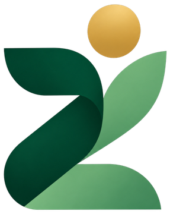<span>Zakademia</span></a>
    <button class="menu-toggle" id="menuToggle" aria-expanded="false" aria-controls="menu">Menu</button>
    <nav class="menu" id="menu" aria-label="Utama">
      <a href="#beranda">Beranda</a>
      <a href="#layanan">Layanan</a>
      <a href="#kajian">Kajian</a>
      <a href="#literasi">Literasi</a>
      <a href="#tentang">Tentang</a>
      <a class="btn btn-deep" href="#kontak">Mari berbincang</a>
    </nav>
  </div>
</header>

<main>
<!-- BERANDA -->
<div data-page="beranda">
  <div class="hero">
    <svg class="hero-bg" viewBox="0 0 300 300" aria-hidden="true"><path d="M10 290 C 40 150 160 40 295 10 C 285 150 220 250 10 290 Z"/></svg>
    <div class="wrap">
      <div class="hero-copy">
        <h1 data-edit="t1">Bertumbuh bersama, <em>bermanfaat bagi sesama.</em></h1>
        <p class="lede" data-edit="t7">Kami menemani lembaga filantropi Islam merawat setiap keputusan dengan ilmu, agar kebaikan yang dititipkan tumbuh dan sampai kepada yang berhak.</p>
        <div class="cta-row">
          <a class="btn btn-deep" href="#kontak">Mari berbincang</a>
          <a class="link" href="#tentang">Kenali Zakademia</a>
        </div>
      </div>
      <div class="hero-art">
        <div class="gallery" id="gallery" aria-roledescription="carousel" aria-label="Galeri Zakademia">
          <div class="frames" id="frames"><figure class="frame on" style="margin:0"></figure><figure class="frame" style="margin:0">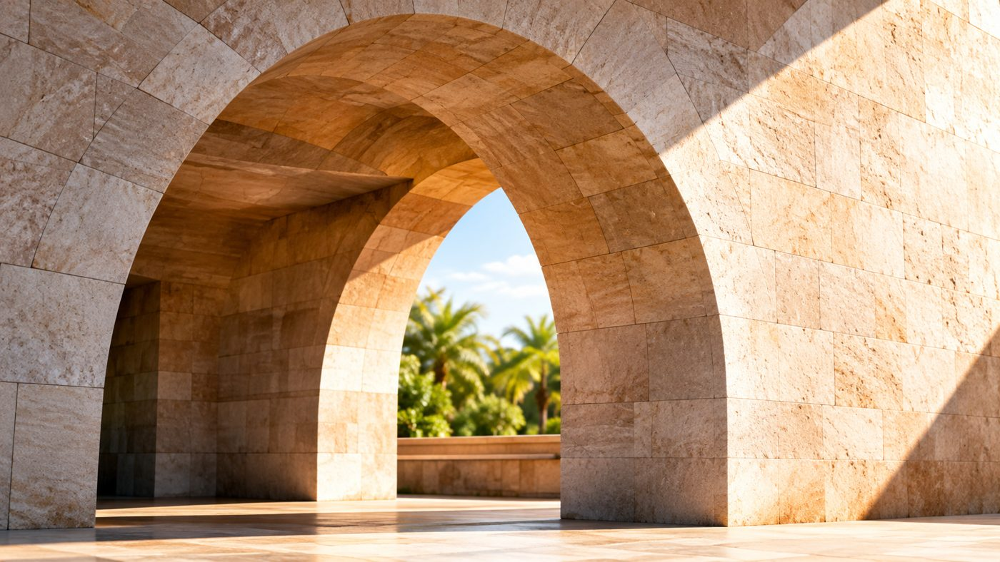</figure><figure class="frame" style="margin:0"></figure><figure class="frame" style="margin:0">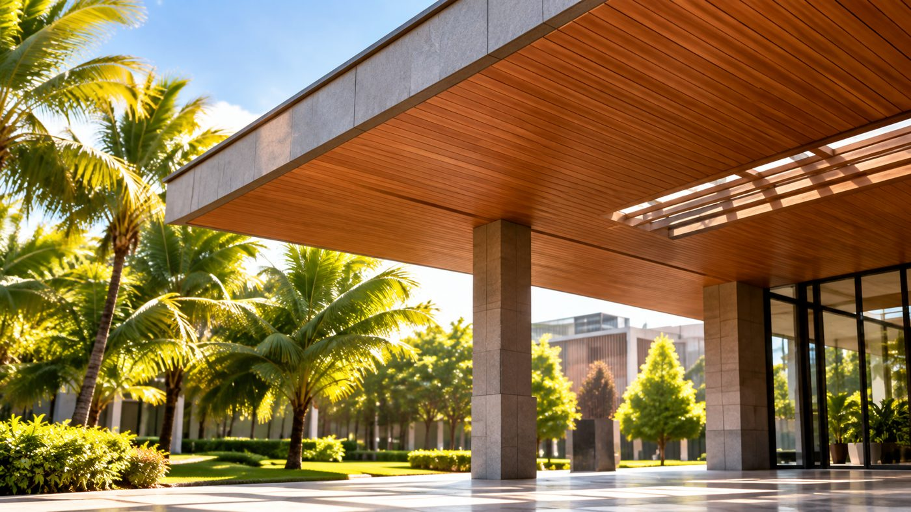</figure><figure class="frame" style="margin:0"></figure><figure class="frame" style="margin:0"></figure><figure class="frame" style="margin:0"></figure></div>
          <div class="dots" id="dots"></div>
        </div>
      </div>
    </div>
  </div>

  <section class="wrap" style="padding-bottom:88px">
    <div data-reveal class="pillars">
      <div><div class="emb xs bare" data-parts="gold top leaf band" role="img" aria-label="Lambang Zakademia, figur yang berlari"><div class="layers">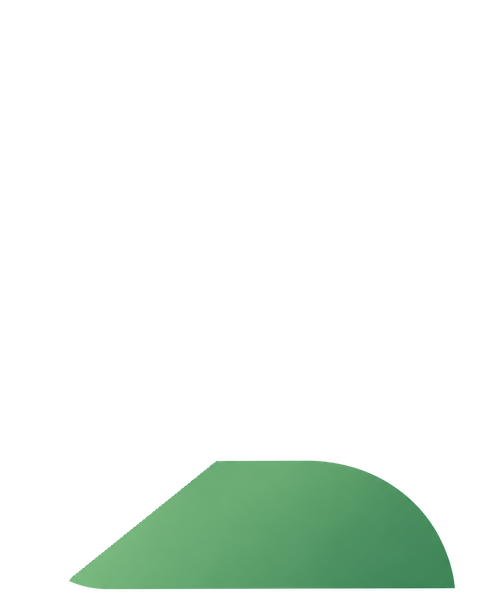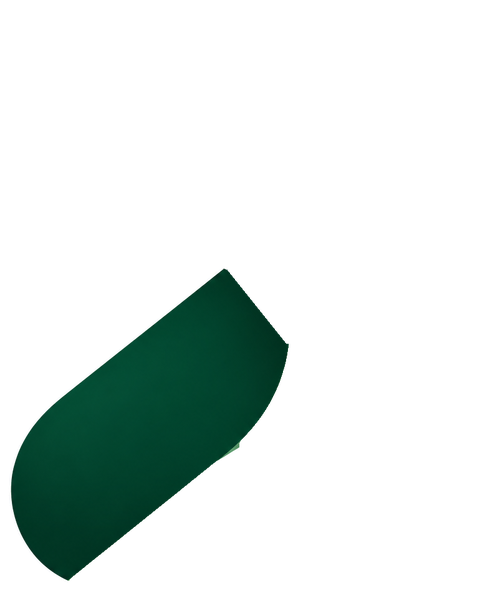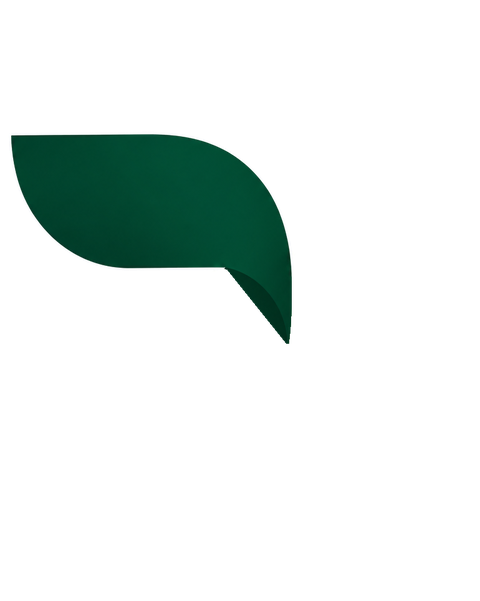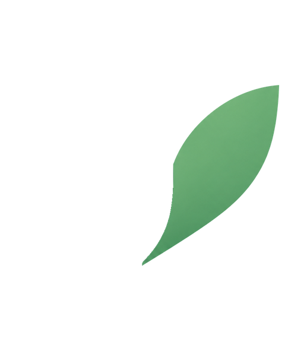</div></div><b>Ilmu</b><span>Kajian yang terbuka dan dapat dipertanggungjawabkan</span></div>
      <div><div class="emb xs bare" data-parts="base" role="img" aria-label="Lambang Zakademia, lengkung dasar"><div class="layers"></div></div><b>Data</b><span>Fondasi yang kokoh untuk setiap langkah</span></div>
      <div><div class="emb xs bare" data-parts="top leaf" role="img" aria-label="Lambang Zakademia, daun terbuka"><div class="layers"></div></div><b>Literasi</b><span>Pengetahuan yang sampai kepada semua</span></div>
    </div>
  </section>

  <svg class="curve" viewBox="0 0 1440 70" preserveAspectRatio="none" aria-hidden="true"><path d="M0 70 C 360 0 900 0 1440 50 L1440 70 Z"/></svg>
  <section class="deep">
    <div class="wrap sec scope">
      <div class="scope-copy">
        <h2 data-edit="scope">Berakar di zakat dan wakaf, <em>bercabang ke seluruh kebaikan.</em></h2>
        <div class="ring-key">
          <div data-ring="1" tabindex="0"><i style="background:var(--gold)"></i><p><b>Zakat dan wakaf,</b> <span>akar tempat kami berpijak.</span></p></div>
          <div data-ring="2" tabindex="0"><i style="background:var(--leaf)"></i><p><b>Infak, sedekah, kurban, dan fidyah,</b> <span>kebaikan yang hadir setiap hari.</span></p></div>
          <div data-ring="3" tabindex="0"><i style="background:var(--leaf-soft)"></i><p><b>Masjid, pesantren, dan lembaga kemanusiaan,</b> <span>rumah tempat kebaikan dirawat.</span></p></div>
          <div data-ring="4" tabindex="0"><i style="background:color-mix(in srgb,var(--deep-ink) 30%,transparent)"></i><p><b>Keuangan sosial Islam,</b> <span>jalan agar manfaat terus mengalir.</span></p></div>
        </div>
      </div>
      <div class="rings">
        <svg viewBox="0 0 460 460" role="img" aria-label="Lingkar kajian Zakademia: zakat dan wakaf di pusat, lalu infak dan sedekah, masjid dan pesantren, hingga keuangan sosial Islam">
          <circle class="ring r4" cx="230" cy="230" r="220" fill="none" stroke="var(--deep-mute)" stroke-opacity=".35" stroke-dasharray="3 7"/>
          <circle class="ring r3" cx="230" cy="230" r="168" fill="var(--leaf-soft)" fill-opacity=".22"/>
          <circle class="ring r2" cx="230" cy="230" r="118" fill="var(--leaf)" fill-opacity=".35"/>
          <circle class="ring r1 core" cx="230" cy="230" r="66" fill="var(--gold)"/>
          <text x="230" y="226" text-anchor="middle" style="fill:#1E1606">Zakat</text>
          <text x="230" y="244" text-anchor="middle" style="fill:#1E1606">&amp; wakaf</text>
          <text x="230" y="138" text-anchor="middle">Infak · sedekah</text>
          <text x="230" y="86" text-anchor="middle" class="soft">Masjid · pesantren</text>
          <text x="230" y="30" text-anchor="middle" class="soft">Keuangan sosial Islam</text>
        </svg>
      </div>
    </div>
  </section>
  <svg class="curve" viewBox="0 0 1440 70" preserveAspectRatio="none" aria-hidden="true" style="transform:scaleY(-1)"><path d="M0 70 C 540 0 1080 0 1440 50 L1440 70 Z"/></svg>

  <section class="wrap sec">
    <div class="sec-head"><h2 data-edit="t12">Cara kami <em>menemani</em></h2><p data-edit="t22">Setiap lembaga tumbuh dengan caranya sendiri. Kami hadir di bagian yang paling Anda butuhkan.</p></div>
    <div class="svc-switch">
      <div class="svc-tabs" role="tablist" aria-label="Layanan Zakademia">
        <button type="button" role="tab" id="tab-0" aria-selected="true" aria-controls="svcPanel" data-i="0"><span class="tag">Figur yang berlari</span><b>Riset Kebutuhan</b></button>
        <button type="button" role="tab" id="tab-1" aria-selected="false" aria-controls="svcPanel" data-i="1"><span class="tag">Lengkung dasar</span><b>Data &amp; Analitik</b></button>
        <button type="button" role="tab" id="tab-2" aria-selected="false" aria-controls="svcPanel" data-i="2"><span class="tag">Daun terbuka</span><b>Ruang Belajar</b></button>
      </div>
      <div class="svc-panel" id="svcPanel" role="tabpanel" aria-labelledby="tab-0">
        <div class="mini-emblem"><div class="ph-emblem mini" id="miniEmblem"><div class="layers" role="img" aria-label="Lambang Zakademia"></div></div></div>
        <div class="svc-text">
          <span class="tag" id="svcTag">Figur yang berlari</span>
          <h3 id="svcName">Riset Kebutuhan</h3>
          <p id="svcDesc">Mendengar pertanyaan yang paling penting bagi lembaga Anda, lalu mencarikan jawabannya dengan cermat.</p>
          <p class="svc-meaning" id="svcMeaning">Seperti sosok yang berlari, riset menjaga lembaga terus bergerak maju dengan arah yang jelas.</p>
          <a class="link" href="#layanan">Selengkapnya</a>
        </div>
      </div>
    </div>
  </section>

  <section class="wrap" style="padding-bottom:88px">
    <div class="sec-head"><h2 data-edit="t13">Karya <em>yang telah terbit</em></h2><a class="link" href="#kajian">Lihat semua kajian</a></div>
    <div class="books compact">
      <article class="book"><div class="cover real"></div><div class="book-body"><span class="kicker">Basapta Press · 2026</span><h3>Data-Driven Fundraising</h3><p class="book-sub">Berhenti Mengira-ngira, Mulai Fundraising dengan Data</p><p class="book-au">Ruli Kurniawan, M. Fahmi Hidayat, Dwi Nurani</p><a class="link" href="https://basaptapress.com/buku/data-driven-fundraising-berhenti-mengira-ngira-mulai-fundraising-dengan-data/" target="_blank" rel="noopener">Lihat buku</a></div></article>
      <article class="book"><div class="cover real">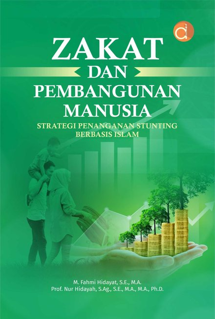</div><div class="book-body"><span class="kicker">Deepublish · 2025</span><h3>Zakat dan Pembangunan Manusia</h3><p class="book-sub">Strategi Penanganan Stunting Berbasis Islam</p><p class="book-au">M. Fahmi Hidayat, Nur Hidayah</p><a class="link" href="https://deepublishstore.com/produk/buku-zakat-dan-pembangunan-manusia-strategi-penanganan-stunting-berbasis-islam/" target="_blank" rel="noopener">Lihat buku</a></div></article>
      <article class="book"><div class="cover real">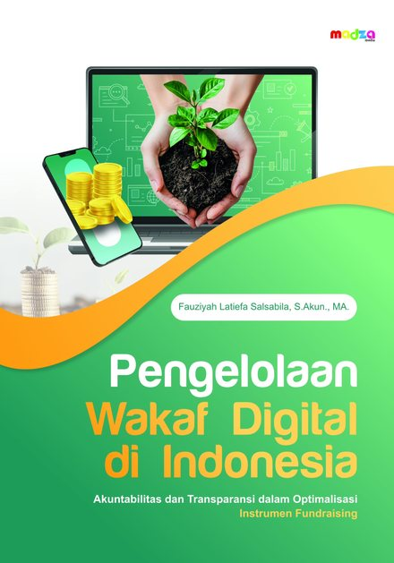</div><div class="book-body"><span class="kicker">Penerbit Madza</span><h3>Pengelolaan Wakaf Digital di Indonesia</h3><p class="book-sub">Akuntabilitas dan Transparansi dalam Optimalisasi Instrumen Fundraising</p><p class="book-au">Fauziyah Latiefa Salsabila</p><a class="link" href="https://penerbitmadza.com/product/pengelolaan-wakaf-digital-di-indonesia-akuntabilitas-dan-transparansi-dalam-optimalisasi-instrumen-fundraising/" target="_blank" rel="noopener">Lihat buku</a></div></article>
      <article class="book"><div class="cover real"></div><div class="book-body"><span class="kicker">Pusat Kajian Strategis BAZNAS · 2025</span><h3>Jejak Inklusivitas Zakat Menuju Indonesia Emas 2045</h3><p class="book-sub">Bab: Membangun Manusia Melalui Zakat: Penanganan Stunting pada Masyarakat Adat Bunda Tanah Melayu</p><p class="book-au">M. Fahmi Hidayat, Ilman Faqih Shibgotullah</p><a class="link" href="https://puskasbaznas.com/publications/books/2072-jejak-inklusivitas-zakat-menuju-indonesia-emas-20245" target="_blank" rel="noopener">Lihat buku</a></div></article>
      <article class="book"><div class="cover real">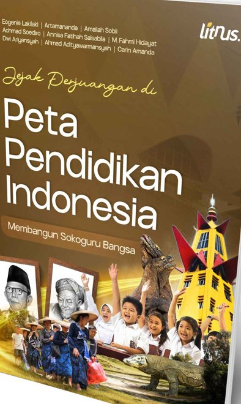</div><div class="book-body"><span class="kicker">Penerbit Litnus · 2026</span><h3>Jejak Perjuangan di Peta Pendidikan Indonesia</h3><p class="book-sub">Bab: Perbendaharaan Masa Depan: Penanganan Stunting di Bunda Tanah Melayu</p><p class="book-au">Eogenie Lakilaki, Artamananda, Amaliah Sobli, Achmad Soediro, Annisa Fatihah Salsabila, M. Fahmi Hidayat, dkk.</p><a class="link" href="https://penerbitlitnus.co.id/portfolio/jejak-perjuangan-di-peta-pendidikan-indonesia-membangun-sokoguru-bangsa/" target="_blank" rel="noopener">Lihat buku</a></div></article>
    </div>
  </section>

  <section class="wrap" style="padding-bottom:88px">
    <div class="sec-head"><h2 data-edit="t14">Dari benih <em>sampai berbuah</em></h2></div>
    <div class="growth" id="growth" aria-hidden="true"><i></i></div>
    <div class="steps" id="steps">
      <div><span class="n">Menyemai</span><h3>Mendengarkan</h3><p>Memahami cerita lembaga dan pertanyaan yang ingin dijawab.</p></div>
      <div><span class="n">Merawat</span><h3>Merancang</h3><p>Menyusun cara meneliti yang sesuai dengan konteks dan nilai lembaga.</p></div>
      <div><span class="n">Menumbuhkan</span><h3>Menelaah</h3><p>Mengolah data dengan teliti hingga menemukan makna di baliknya.</p></div>
      <div><span class="n">Memetik</span><h3>Membagikan</h3><p>Menyampaikan temuan dengan bahasa yang jernih agar manfaatnya terasa.</p></div>
    </div>
  </section>

  <section class="wrap" style="padding-bottom:88px">
    <div class="sec-head"><h2 data-edit="t15">Ruang <em>literasi</em></h2><p data-edit="t23">Enam rubrik untuk belajar kebaikan bersama, terbit setiap pekan di Instagram.</p></div>
    <div data-reveal class="rubrics">
      <a class="rubric" href="https://www.instagram.com/zakademia.official/" target="_blank" rel="noopener">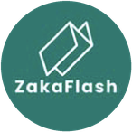<b>ZakaFlash</b><span>Apa yang baru?</span><p>Kabar dan momen penting.</p></a>
      <a class="rubric" href="https://www.instagram.com/zakademia.official/" target="_blank" rel="noopener">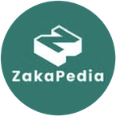<b>ZakaPedia</b><span>Apa artinya?</span><p>Istilah dan konsep, sampai paham.</p></a>
      <a class="rubric" href="https://www.instagram.com/zakademia.official/" target="_blank" rel="noopener">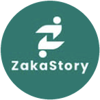<b>ZakaStory</b><span>Siapa yang merasakan?</span><p>Kisah mereka yang tumbuh lewat kebaikan.</p></a>
      <a class="rubric" href="https://www.instagram.com/zakademia.official/" target="_blank" rel="noopener">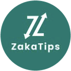<b>ZakaTips</b><span>Bagaimana caranya?</span><p>Panduan untuk mulai berbuat.</p></a>
      <a class="rubric" href="https://www.instagram.com/zakademia.official/" target="_blank" rel="noopener">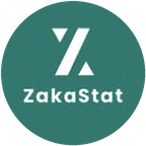<b>ZakaStat</b><span>Berapa besarnya?</span><p>Angka yang bercerita.</p></a>
      <a class="rubric" href="https://www.instagram.com/zakademia.official/" target="_blank" rel="noopener">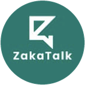<b>ZakaTalk</b><span>Apa kata kamu?</span><p>Ruang berbincang dan bertanya.</p></a>
    </div>
  </section>

  <section class="wrap" style="padding-bottom:88px">
    <div class="sec-head"><h2 data-edit="t16">Teman <em>belajar</em></h2><p data-edit="t24">Dua sahabat yang menemani perjalanan belajar kebaikan bersama Zakademia.</p></div>
    <div class="buddies">
      <article class="buddy">
        <div class="buddy-media">
          <video id="v-zaida" src="zaida.mp4" poster="zaida.jpg" muted loop playsinline preload="metadata" aria-label="Video perkenalan Zaida"></video>
          <button type="button" class="sound" data-v="v-zaida" aria-pressed="false">Dengarkan Zaida</button>
        </div>
        <div class="buddy-body">
          <span class="kicker">Zakat · Infak · Sedekah</span>
          <h3>Zaida</h3>
          <p class="buddy-role">Teman belajar zakat, infak, dan sedekah.</p>
          <p>Ramah dan pendengar yang baik. Zaida menemani belajar dengan tenang, menjawab pertanyaan satu per satu sampai paham.</p>
          <p class="buddy-where">Menyapa dari ruang belajar Zakademia</p>
          <div class="rchips"><span class="rchip">ZakaPedia</span><span class="rchip">ZakaTalk</span><span class="rchip">ZakaTips</span></div>
        </div>
      </article>
      <article class="buddy">
        <div class="buddy-media">
          <video id="v-wafiy" src="wafiy.mp4" poster="wafiy.jpg" muted loop playsinline preload="metadata" aria-label="Video perkenalan Wafiy"></video>
          <button type="button" class="sound" data-v="v-wafiy" aria-pressed="false">Dengarkan Wafiy</button>
        </div>
        <div class="buddy-body">
          <span class="kicker">Wakaf · Filantropi Islam</span>
          <h3>Wafiy</h3>
          <p class="buddy-role">Teman belajar wakaf dan filantropi Islam.</p>
          <p>Murah senyum dan penuh semangat. Wafiy mengajak turun ke lapangan, melihat langsung bagaimana kebaikan bekerja.</p>
          <p class="buddy-where">Menyapa dari lapangan</p>
          <div class="rchips"><span class="rchip">ZakaStory</span><span class="rchip">ZakaFlash</span><span class="rchip">ZakaTips</span></div>
        </div>
      </article>
    </div>
  </section>

  <section class="wrap" style="padding-bottom:88px">
    <div data-reveal class="trio">
      <div><div class="emb sm" data-parts="gold" role="img" aria-label="Lambang Zakademia, titik emas"><div class="layers"></div></div><span class="emb-tag">Titik emas</span><h3>Bermartabat</h3><p>Setiap angka adalah manusia. Kami menjaga martabat donatur dan penerima manfaat di setiap langkah.</p></div>
      <div><div class="emb sm" data-parts="top leaf" role="img" aria-label="Lambang Zakademia, daun terbuka"><div class="layers"></div></div><span class="emb-tag">Daun terbuka</span><h3>Ilmu yang terbuka</h3><p>Pengetahuan baru bermakna ketika dapat dipahami dan dipakai bersama.</p></div>
      <div><div class="emb sm" data-parts="top band" role="img" aria-label="Lambang Zakademia, kanopi"><div class="layers"></div></div><span class="emb-tag">Kanopi</span><h3>Amanah</h3><p>Apa yang dititipkan kepada kami, kami jaga sebaik-baiknya.</p></div>
    </div>
  </section>

  <div class="deep closing"><div class="wrap"><h2>Setiap pertumbuhan <em>dimulai dari percakapan.</em></h2><a class="btn btn-gold" href="#kontak">Mari berbincang</a></div></div>
</div>

<!-- LAYANAN -->
<div data-page="layanan" hidden>
  <div class="wrap page-head"><h1 data-edit="t2">Hadir di setiap <em>musim pertumbuhan.</em></h1><p class="lede" data-edit="t8">Tiga layanan berbasis penelitian untuk mendukung pengambilan keputusan lembaga filantropi Islam, dapat dipilih secara terpisah maupun terintegrasi.</p></div>
  <section class="wrap detail" style="padding-bottom:88px">
    <article>
      <div style="display:flex;flex-direction:column;gap:12px"><div class="emb" data-parts="gold top leaf band" role="img" aria-label="Lambang Zakademia, figur yang berlari"><div class="layers"></div></div><span class="emb-tag">Figur yang berlari</span><h2>Riset Kebutuhan</h2><p>Penelitian terapan yang dirancang berdasarkan kebutuhan informasi lembaga, mencakup perilaku donatur, evaluasi program, dan pemetaan potensi.</p></div>
      <div><h3>Contoh pertanyaan penelitian</h3><ul><li>Siapa yang setia memberi, dan apa yang membuat mereka bertahan?</li><li>Sejauh mana program telah mengubah kehidupan penerima manfaat?</li><li>Di mana kebaikan yang belum tersentuh?</li></ul></div>
      <div><h3>Luaran</h3><ul><li>Rancangan kajian yang sesuai konteks</li><li>Laporan temuan dan ringkasan bagi pimpinan</li><li>Diskusi hasil bersama tim</li></ul></div>
    </article>
    <article>
      <div style="display:flex;flex-direction:column;gap:12px"><div class="emb" data-parts="base" role="img" aria-label="Lambang Zakademia, lengkung dasar"><div class="layers"></div></div><span class="emb-tag">Lengkung dasar</span><h2>Data &amp; Analitik</h2><p>Pengelolaan, standardisasi, dan analisis data kelembagaan sebagai dasar pemantauan kinerja.</p></div>
      <div><h3>Lingkup</h3><ul><li>Catatan penghimpunan dan penyaluran</li><li>Ukuran keberhasilan yang disepakati bersama</li><li>Pemahaman tentang beragam donatur</li></ul></div>
      <div><h3>Yang tumbuh bersama Anda</h3><ul><li>Kamus data lembaga</li><li>Panel pemantauan yang dirawat tim sendiri</li><li>Panduan penggunaan</li></ul></div>
    </article>
    <article>
      <div style="display:flex;flex-direction:column;gap:12px"><div class="emb" data-parts="top leaf" role="img" aria-label="Lambang Zakademia, daun terbuka"><div class="layers"></div></div><span class="emb-tag">Daun terbuka</span><h2>Ruang Belajar</h2><p>Penguatan kapasitas metodologi penelitian bagi pengelola dan pemerhati filantropi Islam.</p></div>
      <div><h3>Sasaran</h3><ul><li>Amil, nazhir, dan pengelola lembaga</li><li>Pengurus masjid dan pesantren</li><li>Mahasiswa, pengajar, dan peneliti</li></ul></div>
      <div><h3>Format</h3><ul><li>Kelas terbuka</li><li>Belajar bersama di lembaga</li><li>Bimbingan penelitian</li></ul></div>
    </article>
  </section>
  <div class="deep closing"><div class="wrap"><h2>Konsultasikan kebutuhan penelitian <em>lembaga Anda.</em></h2><a class="btn btn-gold" href="#kontak">Mari berbincang</a></div></div>
</div>

<!-- KAJIAN -->
<div data-page="kajian" hidden>
  <div class="wrap page-head"><h1 data-edit="t3">Bidang <em>kajian.</em></h1><p class="lede" data-edit="t9">Enam bidang kajian yang disintesis dari penelitian tim Zakademia tentang zakat dan wakaf.</p></div>
  <section class="wrap" style="padding-bottom:88px">
    <div class="studies">
      <article class="study">
        <div class="study-head"><span class="study-tag">Zakat</span><h3>Zakat, Ketahanan Pangan, dan Penanganan Stunting</h3><p class="study-sub">Tinjauan literatur sistematis dan studi kasus masyarakat adat</p></div>
        <p class="study-lead">Zakat kami pandang sebagai investasi pada manusia, bukan sekadar bantuan sesaat. Kajian ini menelusuri bagaimana zakat dapat ikut memperkuat ketahanan pangan dan menangani stunting, dari tinjauan literatur hingga pengalaman masyarakat adat Bunda Tanah Melayu.</p>
        <ul class="study-pts"><li>Zakat dapat diarahkan untuk ketahanan pangan dan penanganan stunting.</li><li>Lembaga zakat berpeluang berperan lebih besar dalam pembangunan sumber daya manusia.</li><li>Pengalaman masyarakat adat menjadi pelajaran tentang zakat yang inklusif.</li></ul>
        <div class="study-refs"><span class="kicker">Dari karya</span><a href="https://scholar.google.com/citations?view_op=view_citation&hl=id&user=HfSu1HAAAAAJ&citation_for_view=HfSu1HAAAAAJ:Tyk-4Ss8FVUC" target="_blank" rel="noopener"><span>2024</span>Kontribusi Zakat untuk Ketahanan Pangan dan Pengentasan Stunting</a><a href="https://deepublishstore.com/produk/buku-zakat-dan-pembangunan-manusia-strategi-penanganan-stunting-berbasis-islam/" target="_blank" rel="noopener"><span>2025</span>Buku Zakat dan Pembangunan Manusia</a><a href="https://puskasbaznas.com/publications/books/2072-jejak-inklusivitas-zakat-menuju-indonesia-emas-20245" target="_blank" rel="noopener"><span>2025</span>Bab Membangun Manusia Melalui Zakat</a><a href="https://penerbitlitnus.co.id/portfolio/jejak-perjuangan-di-peta-pendidikan-indonesia-membangun-sokoguru-bangsa/" target="_blank" rel="noopener"><span>2026</span>Bab Perbendaharaan Masa Depan</a></div>
      </article>
      <article class="study">
        <div class="study-head"><span class="study-tag">Zakat</span><h3>Penghimpunan Zakat dan Transformasi Digital</h3><p class="study-sub">Kajian historis-regulatif dan analisis konten media sosial</p></div>
        <p class="study-lead">Penghimpunan zakat tumbuh berlapis, bukan sekadar berpindah dari cara lama ke cara digital. Kepercayaan pada tokoh agama dan budaya setempat tetap hidup berdampingan dengan kanal kelembagaan dan digital.</p>
        <ul class="study-pts"><li>Model hibrida tradisional, kelembagaan, dan digital dibutuhkan agar penghimpunan berkelanjutan.</li><li>Di Instagram, konten yang mendidik sekaligus menghibur paling banyak mendapat tanggapan; carousel mengungguli gambar tunggal dan Reels.</li><li>Data donatur yang dikelola dan dianalisis membuat penghimpunan lebih terukur.</li></ul>
        <div class="study-refs"><span class="kicker">Dari karya</span><a href="https://doi.org/10.15408/aiq.v17i2.50032" target="_blank" rel="noopener"><span>2025</span>Zakat Fundraising in Indonesia</a><a href="https://doi.org/10.24090/e66nfj61" target="_blank" rel="noopener"><span>2026</span>Instagram Content Engagement in Islamic Philanthropy</a><a href="https://basaptapress.com/buku/data-driven-fundraising-berhenti-mengira-ngira-mulai-fundraising-dengan-data/" target="_blank" rel="noopener"><span>2026</span>Buku Data-Driven Fundraising</a></div>
      </article>
      <article class="study">
        <div class="study-head"><span class="study-tag">Zakat</span><h3>Efisiensi dan Tata Kelola Organisasi Pengelola Zakat</h3><p class="study-sub">Data Envelopment Analysis dan analisis indeks kinerja lembaga</p></div>
        <p class="study-lead">Efisiensi lembaga zakat tidak lahir dari teknologi semata. Keseimbangan antara biaya dan hasil, kekuatan basis relawan, serta dukungan kelembagaan menjadi penentunya.</p>
        <ul class="study-pts"><li>Lembaga dengan basis relawan kuat hingga desa tercatat paling efisien di antara pengelola zakat berbasis teknologi finansial.</li><li>BAZNAS kabupaten/kota masih tertinggal pada Indeks Zakat Nasional, kepatuhan syariah, dan transparansi.</li><li>Penguatan kapasitas, dukungan pemerintah daerah, dan kolaborasi dengan masyarakat menjadi jalan keluarnya.</li></ul>
        <div class="study-refs"><span class="kicker">Dari karya</span><a href="https://doi.org/10.21043/equilibrium.v11i2.22616" target="_blank" rel="noopener"><span>2024</span>Does Financial Technology Increase the Efficiency of ZMOs?</a><a href="https://scholar.google.com/citations?view_op=view_citation&hl=id&user=HfSu1HAAAAAJ&citation_for_view=HfSu1HAAAAAJ:u5HHmVD_uO8C" target="_blank" rel="noopener"><span>2022</span>Analisis Efisiensi OPZ dengan DEA</a><a href="https://doi.org/10.69948/ziswaf.72" target="_blank" rel="noopener"><span>2026</span>Structural Challenges in Zakat Management</a></div>
      </article>
      <article class="study">
        <div class="study-head"><span class="study-tag">Wakaf</span><h3>Akuntabilitas dan Transparansi Lembaga Wakaf</h3><p class="study-sub">Tinjauan literatur sistematis dan studi lembaga wakaf digital</p></div>
        <p class="study-lead">Kepercayaan adalah modal utama wakaf. Kajian ini memetakan apa yang membuat lembaga wakaf, termasuk wakaf digital, dapat dipertanggungjawabkan kepada wakif dan masyarakat.</p>
        <ul class="study-pts"><li>Akuntabilitas wakaf bertumpu pada tiga hal: proses, kerangka kelembagaan, dan teknik pelaporan.</li><li>Kerja sama pihak internal dan eksternal lembaga menjadi kunci.</li><li>Wakaf uang melalui platform digital menuntut akuntansi dan pelaporan yang tertata.</li></ul>
        <div class="study-refs"><span class="kicker">Dari karya</span><a href="https://doi.org/10.22373/jose.v5i2.5343" target="_blank" rel="noopener"><span>2024</span>Strengthening Accountability Mechanisms in Waqf Institutions</a><a href="https://penerbitmadza.com/product/pengelolaan-wakaf-digital-di-indonesia-akuntabilitas-dan-transparansi-dalam-optimalisasi-instrumen-fundraising/" target="_blank" rel="noopener"><span>Buku</span>Buku Pengelolaan Wakaf Digital di Indonesia</a></div>
      </article>
      <article class="study">
        <div class="study-head"><span class="study-tag">Zakat</span><h3>Analitik Data untuk Pemberdayaan Mustahik</h3><p class="study-sub">Pembelajaran mesin yang dapat dijelaskan (Explainable Boosting Machine)</p></div>
        <p class="study-lead">Data membantu lembaga mengambil keputusan yang adil dan dapat dijelaskan. Model analitik yang transparan dapat menjadi teman bagi pendamping usaha mustahik, bukan kotak hitam.</p>
        <ul class="study-pts"><li>Model yang mudah dijelaskan mampu menilai risiko pembiayaan mustahik dengan akurat.</li><li>Sisa saldo, jenis usaha, dan pendapatan rumah tangga menjadi penentu risiko terbesar.</li><li>Sistem peringatan dini dapat membantu pendampingan sebelum masalah membesar.</li></ul>
        <div class="study-refs"><span class="kicker">Dari karya</span><a href="https://doi.org/10.33096/ilkom.v17i3.3214.312-322" target="_blank" rel="noopener"><span>2025</span>Explainable Boosting Machine for BAZNAS Microfinance Desa</a><a href="https://basaptapress.com/buku/data-driven-fundraising-berhenti-mengira-ngira-mulai-fundraising-dengan-data/" target="_blank" rel="noopener"><span>2026</span>Buku Data-Driven Fundraising</a></div>
      </article>
      <article class="study">
        <div class="study-head"><span class="study-tag">Zakat</span><h3>Dimensi Spiritual Zakat dan Ketenangan Batin Muzaki</h3><p class="study-sub">Analisis semantik Al-Qur’an dan pendekatan hermeneutika</p></div>
        <p class="study-lead">Zakat tidak hanya mengubah kehidupan penerima, tetapi juga menenangkan pemberinya. Kajian makna sakan dalam QS At-Taubah 103 melahirkan konsep ketenangan batin muzaki.</p>
        <ul class="study-pts"><li>Zakat dipahami sebagai proses penyucian, pertumbuhan spiritual, dan penenang jiwa.</li><li>Transformasi batin pemberi layak ditempatkan sejajar dengan fungsi sosial zakat.</li></ul>
        <div class="study-refs"><span class="kicker">Dari karya</span><a href="https://doi.org/10.35961/rsd.v7i1.2956" target="_blank" rel="noopener"><span>2026</span>Toward Muzakki Inner Peace</a></div>
      </article>
    </div>
  </section>
  <section class="wrap" style="padding-bottom:88px">
    <div class="sec-head"><h2 data-edit="t17">Publikasi <em>buku</em></h2><p data-edit="t25">Buku dan bab buku tim Zakademia di bidang zakat, wakaf, dan pembangunan manusia.</p></div>
    <div class="books">
      <article class="book"><div class="cover real"></div><div class="book-body"><span class="kicker">Basapta Press · 2026</span><h3>Data-Driven Fundraising</h3><p class="book-sub">Berhenti Mengira-ngira, Mulai Fundraising dengan Data</p><p class="book-au">Ruli Kurniawan, M. Fahmi Hidayat, Dwi Nurani</p><p class="book-meta">ISBN 978-634-04-9338-2 · 200 hlm.</p><p>Panduan bagi pengelola zakat dan fundraiser untuk beralih ke penghimpunan yang terukur: dari pengelolaan dan segmentasi data donatur hingga analisis deskriptif, diagnostik, prediktif, dan preskriptif.</p><a class="link" href="https://basaptapress.com/buku/data-driven-fundraising-berhenti-mengira-ngira-mulai-fundraising-dengan-data/" target="_blank" rel="noopener">Lihat buku</a></div></article>
      <article class="book"><div class="cover real"></div><div class="book-body"><span class="kicker">Deepublish · 2025</span><h3>Zakat dan Pembangunan Manusia</h3><p class="book-sub">Strategi Penanganan Stunting Berbasis Islam</p><p class="book-au">M. Fahmi Hidayat, Nur Hidayah</p><p class="book-meta">ISBN 978-634-01-0720-3 · xx + 230 hlm.</p><p>Mengkaji peran zakat dan lembaga zakat dalam penanganan stunting di Indonesia, serta dampaknya bagi kualitas sumber daya manusia menuju Indonesia Emas 2045.</p><a class="link" href="https://deepublishstore.com/produk/buku-zakat-dan-pembangunan-manusia-strategi-penanganan-stunting-berbasis-islam/" target="_blank" rel="noopener">Lihat buku</a></div></article>
      <article class="book"><div class="cover real"></div><div class="book-body"><span class="kicker">Penerbit Madza</span><h3>Pengelolaan Wakaf Digital di Indonesia</h3><p class="book-sub">Akuntabilitas dan Transparansi dalam Optimalisasi Instrumen Fundraising</p><p class="book-au">Fauziyah Latiefa Salsabila</p><p>Menelaah akuntabilitas dan transparansi dua lembaga wakaf digital di bawah perbankan syariah, termasuk akuntansi wakaf dan pengelolaan wakaf uang melalui platform digital.</p><a class="link" href="https://penerbitmadza.com/product/pengelolaan-wakaf-digital-di-indonesia-akuntabilitas-dan-transparansi-dalam-optimalisasi-instrumen-fundraising/" target="_blank" rel="noopener">Lihat buku</a></div></article>
      <article class="book"><div class="cover real"></div><div class="book-body"><span class="kicker">Pusat Kajian Strategis BAZNAS · 2025</span><h3>Jejak Inklusivitas Zakat Menuju Indonesia Emas 2045</h3><p class="book-sub">Bab: Membangun Manusia Melalui Zakat: Penanganan Stunting pada Masyarakat Adat Bunda Tanah Melayu</p><p class="book-au">M. Fahmi Hidayat, Ilman Faqih Shibgotullah</p><p class="book-meta">ISBN 978-623-5858-34-0 · hlm. 421–452</p><p>Bunga rampai tentang zakat yang inklusif bagi pendidikan, penyandang disabilitas, masyarakat adat, dan anak-anak di daerah 3T.</p><a class="link" href="https://puskasbaznas.com/publications/books/2072-jejak-inklusivitas-zakat-menuju-indonesia-emas-20245" target="_blank" rel="noopener">Lihat buku</a></div></article>
      <article class="book"><div class="cover real"></div><div class="book-body"><span class="kicker">Penerbit Litnus · 2026</span><h3>Jejak Perjuangan di Peta Pendidikan Indonesia</h3><p class="book-sub">Bab: Perbendaharaan Masa Depan: Penanganan Stunting di Bunda Tanah Melayu</p><p class="book-au">Eogenie Lakilaki, Artamananda, Amaliah Sobli, Achmad Soediro, Annisa Fatihah Salsabila, M. Fahmi Hidayat, dkk.</p><p class="book-meta">viii + 88 hlm. · hlm. 47–56</p><p>Refleksi sembilan penulis tentang jarak antara kebijakan pendidikan dan dampaknya di ruang kelas hingga daerah terpencil.</p><a class="link" href="https://penerbitlitnus.co.id/portfolio/jejak-perjuangan-di-peta-pendidikan-indonesia-membangun-sokoguru-bangsa/" target="_blank" rel="noopener">Lihat buku</a></div></article>
    </div>
  </section>
  <section class="wrap" style="padding-bottom:88px">
    <div class="sec-head"><h2 data-edit="t18">Artikel <em>ilmiah</em></h2><p data-edit="t26">Ringkasan temuan artikel jurnal tim Zakademia beserta tautan ke sumber aslinya.</p></div>
    <div class="filters" role="group" aria-label="Saring menurut tema">
      <button type="button" data-t="semua" aria-pressed="true">Semua</button><button type="button" data-t="zakat" aria-pressed="false">Zakat</button><button type="button" data-t="wakaf" aria-pressed="false">Wakaf</button><button type="button" data-t="data" aria-pressed="false">Data &amp; Digital</button><button type="button" data-t="keuangan" aria-pressed="false">Keuangan Syariah</button><button type="button" data-t="pemikiran" aria-pressed="false">Pemikiran Islam</button>
    </div>
    <div class="papers" id="papers">
      <article class="paper" data-topic="pemikiran">
        <div class="paper-meta"><span class="paper-year">2026</span><span class="paper-topic">Pemikiran Islam</span></div>
        <h3><a href="https://doi.org/10.35961/rsd.v7i1.2956" target="_blank" rel="noopener">Toward Muzakki Inner Peace: A Semantic Analysis of Sakan in the Qur’anic Discourse on Zakat</a></h3>
        <p class="paper-au">Abdur Rofiq, M. Fahmi Hidayat</p>
        <p class="paper-jr">RUSYDIAH: Jurnal Pemikiran Islam 7(1), 35–53</p>
        <p class="paper-sum">Zakat juga menenangkan pemberinya. Lewat kajian makna sakan dalam QS At-Taubah 103, kajian ini menawarkan konsep ketenangan batin muzaki: zakat sebagai penyucian, pertumbuhan spiritual, dan penenang jiwa.</p>
      </article>
      <article class="paper" data-topic="data">
        <div class="paper-meta"><span class="paper-year">2026</span><span class="paper-topic">Data &amp; Digital</span></div>
        <h3><a href="https://doi.org/10.24090/e66nfj61" target="_blank" rel="noopener">Instagram Content Engagement in Islamic Philanthropy: Evidence from BAZNAS Indonesia</a></h3>
        <p class="paper-au">Lusi Emawati, M. Fahmi Hidayat, Rulli Kurniawan, Eneng Riska Rahayu Putri</p>
        <p class="paper-jr">Ijtimā‘iyya: Journal of Muslim Society Research 11(1), 337–350</p>
        <p class="paper-sum">Dari 544 unggahan Instagram BAZNAS, konten yang menghibur sekaligus mendidik paling banyak disukai dan dikomentari. Carousel mengungguli gambar tunggal dan Reels, sedangkan ajakan berinteraksi saja tidak berpengaruh nyata.</p>
      </article>
      <article class="paper" data-topic="zakat">
        <div class="paper-meta"><span class="paper-year">2026</span><span class="paper-topic">Zakat</span></div>
        <h3><a href="https://doi.org/10.69948/ziswaf.72" target="_blank" rel="noopener">Structural Challenges in Zakat Management and Policy Recommendations for BAZNAS Regency/City</a></h3>
        <p class="paper-au">Citra Septiani, Ahmad Badrun Kosasih, M. Fahmi Hidayat</p>
        <p class="paper-jr">ZISWAF ASFA Journal 4(1), 17–34</p>
        <p class="paper-sum">Diukur dengan Indeks Zakat Nasional, Indeks Kepatuhan Syariah, dan Indeks Transparansi, BAZNAS kabupaten/kota masih tertinggal. Kuncinya: kapasitas kelembagaan, dukungan pemerintah daerah, dan kolaborasi dengan masyarakat.</p>
      </article>
      <article class="paper" data-topic="zakat">
        <div class="paper-meta"><span class="paper-year">2025</span><span class="paper-topic">Zakat</span><span class="paper-cite">Dikutip 5</span></div>
        <h3><a href="https://doi.org/10.15408/aiq.v17i2.50032" target="_blank" rel="noopener">Zakat Fundraising in Indonesia: Continuity, Legal Framework, and Digital Transformation</a></h3>
        <p class="paper-au">Faya Rizti Khoiriyah, M. Fahmi Hidayat</p>
        <p class="paper-jr">Al-Iqtishad: Jurnal Ilmu Ekonomi Syariah 17(2)</p>
        <p class="paper-sum">Penghimpunan zakat tidak sekadar berpindah dari cara tradisional ke digital. Kepercayaan pada tokoh agama dan budaya lokal tetap berjalan berdampingan dengan kanal kelembagaan dan digital, sehingga dibutuhkan model hibrida.</p>
      </article>
      <article class="paper" data-topic="data">
        <div class="paper-meta"><span class="paper-year">2025</span><span class="paper-topic">Data &amp; Digital</span><span class="paper-cite">Dikutip 1</span></div>
        <h3><a href="https://doi.org/10.33096/ilkom.v17i3.3214.312-322" target="_blank" rel="noopener">Explainable Boosting Machine for Transparent Risk Assessment in BAZNAS Microfinance Desa</a></h3>
        <p class="paper-au">Harjunadi Wicaksono, Agus Riyanto, Risanto Darmawan, M. Fahmi Hidayat, Ali Khumaidi</p>
        <p class="paper-jr">ILKOM Jurnal Ilmiah 17(3), 312–322</p>
        <p class="paper-sum">Model pembelajaran mesin yang mudah dijelaskan membantu menilai risiko pembiayaan 736 mustahik (2019–2024) dengan ROC-AUC 0,853. Sisa saldo, jenis usaha, dan pendapatan rumah tangga menjadi penentu terbesar.</p>
      </article>
      <article class="paper" data-topic="zakat">
        <div class="paper-meta"><span class="paper-year">2024</span><span class="paper-topic">Zakat</span><span class="paper-cite">Dikutip 11</span></div>
        <h3><a href="https://scholar.google.com/citations?view_op=view_citation&hl=id&user=HfSu1HAAAAAJ&citation_for_view=HfSu1HAAAAAJ:Tyk-4Ss8FVUC" target="_blank" rel="noopener">Kontribusi Zakat untuk Ketahanan Pangan dan Pengentasan Stunting: Tinjauan Literatur Sistematis</a></h3>
        <p class="paper-au">M. Fahmi Hidayat, Fauziyah Latiefa Salsabila</p>
        <p class="paper-jr">IHTIYATH: Jurnal Manajemen Keuangan Syariah 8(1), 46–66</p>
        <p class="paper-sum">Tinjauan literatur sistematis tentang peran zakat dalam memperkuat ketahanan pangan dan mengentaskan stunting.</p>
      </article>
      <article class="paper" data-topic="wakaf">
        <div class="paper-meta"><span class="paper-year">2024</span><span class="paper-topic">Wakaf</span><span class="paper-cite">Dikutip 6</span></div>
        <h3><a href="https://doi.org/10.22373/jose.v5i2.5343" target="_blank" rel="noopener">Strengthening Accountability Mechanisms in Waqf Institutions: A Systematic Literature Review</a></h3>
        <p class="paper-au">Fauziyah Latiefa Salsabila, Rini, M. Fahmi Hidayat</p>
        <p class="paper-jr">Journal of Sharia Economics 5(2), 174–194</p>
        <p class="paper-sum">Dari literatur 2014–2024, akuntabilitas lembaga wakaf bertumpu pada tiga hal: proses, kerangka kelembagaan, dan teknik pelaporan. Kerja sama pihak internal dan eksternal menjadi kunci.</p>
      </article>
      <article class="paper" data-topic="data">
        <div class="paper-meta"><span class="paper-year">2024</span><span class="paper-topic">Data &amp; Digital</span><span class="paper-cite">Dikutip 1</span></div>
        <h3><a href="https://doi.org/10.21043/equilibrium.v11i2.22616" target="_blank" rel="noopener">Does Financial Technology Increase the Efficiency of Zakat Management Organizations or Other Factors?</a></h3>
        <p class="paper-au">Roikhan Mochamad Aziz, M. Fahmi Hidayat, Fauziyah Latiefa Salsabila</p>
        <p class="paper-jr">Equilibrium: Jurnal Ekonomi Syariah 11(2)</p>
        <p class="paper-sum">Dari empat organisasi pengelola zakat berbasis teknologi finansial, yang paling efisien justru yang kuat basis relawannya hingga desa. Efisiensi lebih ditentukan oleh keseimbangan biaya dan hasil daripada teknologi semata.</p>
      </article>
      <article class="paper" data-topic="keuangan">
        <div class="paper-meta"><span class="paper-year">2024</span><span class="paper-topic">Keuangan Syariah</span><span class="paper-cite">Dikutip 2</span></div>
        <h3><a href="https://doi.org/10.24090/jimrf.v13i1.11252" target="_blank" rel="noopener">The Role of Worship Values in Enhancing the Efficiency of Islamic Commercial Banks: A Data Envelopment Analysis (DEA) Approach</a></h3>
        <p class="paper-au">M. Fahmi Hidayat, Roikhan M. Aziz</p>
        <p class="paper-jr">Jurnal Ilmiah Mahasiswa Raushan Fikr 13(1)</p>
        <p class="paper-sum">Mengukur efisiensi empat bank umum syariah pada 2018–2021: tingkat efisiensinya berfluktuasi, dengan satu bank konsisten efisien penuh.</p>
      </article>
      <article class="paper" data-topic="zakat">
        <div class="paper-meta"><span class="paper-year">2022</span><span class="paper-topic">Zakat</span><span class="paper-cite">Dikutip 2</span></div>
        <h3><a href="https://scholar.google.com/citations?view_op=view_citation&hl=id&user=HfSu1HAAAAAJ&citation_for_view=HfSu1HAAAAAJ:u5HHmVD_uO8C" target="_blank" rel="noopener">Analisis Efisiensi Organisasi Pengelola Zakat (OPZ) di Indonesia dengan Pendekatan Data Envelopment Analysis (DEA): Studi 4 OPZ Berbasis Teknologi Finansial</a></h3>
        <p class="paper-au">M. Fahmi Hidayat</p>
        <p class="paper-jr">UIN Sunan Kalijaga Yogyakarta</p>
        <p class="paper-sum">Mengukur efisiensi empat organisasi pengelola zakat berbasis teknologi finansial dengan pendekatan DEA.</p>
      </article>
    </div>
    <p class="notice" style="margin-top:20px">Jumlah kutipan menurut Google Scholar per 11 Oktober 2026.</p>
  </section>
  <svg class="curve" viewBox="0 0 1440 70" preserveAspectRatio="none" aria-hidden="true"><path d="M0 70 C 360 0 900 0 1440 50 L1440 70 Z"/></svg>
  <section class="deep"><div class="wrap sec">
    <div class="sec-head"><h2 data-edit="t19">Prinsip etika <em>penelitian</em></h2><p data-edit="t27">Prinsip metodologis dan etis yang diterapkan dalam setiap penelitian.</p></div>
    <div data-reveal class="rub">
      <div><h3>Jujur pada data</h3><p>Temuan disampaikan apa adanya.</p></div>
      <div><h3>Jelas sumbernya</h3><p>Setiap angka dapat ditelusuri asalnya.</p></div>
      <div><h3>Menjaga yang dititipkan</h3><p>Identitas dan data dilindungi dengan sungguh-sungguh.</p></div>
      <div><h3>Terbuka caranya</h3><p>Jalan menuju kesimpulan dapat diperiksa bersama.</p></div>
      <div><h3>Mudah dipahami</h3><p>Ilmu ditulis agar sampai dan bermanfaat.</p></div>
      <div><h3>Menghormati ilmuwan</h3><p>Karya peneliti lain selalu kami sebut dan hargai.</p></div>
    </div>
  </div></section>
</div>

<!-- LITERASI -->
<div data-page="literasi" hidden>
  <div class="wrap page-head"><h1 data-edit="t4">Ilmu yang <em>dibagikan kepada semua.</em></h1><p class="lede" data-edit="t10">Program literasi publik Zakademia disajikan melalui enam rubrik edukasi di Instagram.</p></div>
  <section class="wrap" style="padding-bottom:88px">
    <div class="sec-head"><h2 data-edit="t20">Teman <em>belajar</em></h2><p data-edit="t28">Dua karakter edukatif yang menyampaikan materi zakat, infak, sedekah, wakaf, dan filantropi Islam.</p></div>
    <div class="buddies">
      <article class="buddy">
        <div class="buddy-media">
          <video id="v2-zaida" src="zaida.mp4" poster="zaida.jpg" muted loop playsinline preload="metadata" aria-label="Video perkenalan Zaida"></video>
          <button type="button" class="sound" data-v="v2-zaida" aria-pressed="false">Dengarkan Zaida</button>
        </div>
        <div class="buddy-body">
          <span class="kicker">Zakat · Infak · Sedekah</span>
          <h3>Zaida</h3>
          <p class="buddy-role">Teman belajar zakat, infak, dan sedekah.</p>
          <p>Ramah dan pendengar yang baik. Zaida menemani belajar dengan tenang, menjawab pertanyaan satu per satu sampai paham.</p>
          <p class="buddy-where">Menyapa dari ruang belajar Zakademia</p>
          <div class="rchips"><span class="rchip">ZakaPedia</span><span class="rchip">ZakaTalk</span><span class="rchip">ZakaTips</span></div>
        </div>
      </article>
      <article class="buddy">
        <div class="buddy-media">
          <video id="v2-wafiy" src="wafiy.mp4" poster="wafiy.jpg" muted loop playsinline preload="metadata" aria-label="Video perkenalan Wafiy"></video>
          <button type="button" class="sound" data-v="v2-wafiy" aria-pressed="false">Dengarkan Wafiy</button>
        </div>
        <div class="buddy-body">
          <span class="kicker">Wakaf · Filantropi Islam</span>
          <h3>Wafiy</h3>
          <p class="buddy-role">Teman belajar wakaf dan filantropi Islam.</p>
          <p>Murah senyum dan penuh semangat. Wafiy mengajak turun ke lapangan, melihat langsung bagaimana kebaikan bekerja.</p>
          <p class="buddy-where">Menyapa dari lapangan</p>
          <div class="rchips"><span class="rchip">ZakaStory</span><span class="rchip">ZakaFlash</span><span class="rchip">ZakaTips</span></div>
        </div>
      </article>
    </div>
  </section>

  <svg class="curve" viewBox="0 0 1440 70" preserveAspectRatio="none" aria-hidden="true"><path d="M0 70 C 360 0 900 0 1440 50 L1440 70 Z"/></svg>
  <section class="deep"><div class="wrap sec">
    <div data-reveal class="rubrics">
      <a class="rubric" href="https://www.instagram.com/zakademia.official/" target="_blank" rel="noopener"><b>ZakaFlash</b><span>Apa yang baru?</span><p>Kabar dan momen penting.</p></a>
      <a class="rubric" href="https://www.instagram.com/zakademia.official/" target="_blank" rel="noopener"><b>ZakaPedia</b><span>Apa artinya?</span><p>Istilah dan konsep, sampai paham.</p></a>
      <a class="rubric" href="https://www.instagram.com/zakademia.official/" target="_blank" rel="noopener"><b>ZakaStory</b><span>Siapa yang merasakan?</span><p>Kisah mereka yang tumbuh lewat kebaikan.</p></a>
      <a class="rubric" href="https://www.instagram.com/zakademia.official/" target="_blank" rel="noopener"><b>ZakaTips</b><span>Bagaimana caranya?</span><p>Panduan untuk mulai berbuat.</p></a>
      <a class="rubric" href="https://www.instagram.com/zakademia.official/" target="_blank" rel="noopener"><b>ZakaStat</b><span>Berapa besarnya?</span><p>Angka yang bercerita.</p></a>
      <a class="rubric" href="https://www.instagram.com/zakademia.official/" target="_blank" rel="noopener"><b>ZakaTalk</b><span>Apa kata kamu?</span><p>Ruang berbincang dan bertanya.</p></a>
    </div>
    <p style="margin-top:44px"><a class="btn btn-gold" href="https://www.instagram.com/zakademia.official/" target="_blank" rel="noopener">Ikuti @zakademia.official</a></p>
  </div></section>
</div>

<!-- TENTANG -->
<div data-page="tentang" hidden>
  <div class="wrap page-head"><h1 data-edit="t5">Tempat ilmu dan kebaikan <em>tumbuh bersama.</em></h1></div>
  <section class="wrap about" style="padding-bottom:72px">
    <div>
      <p class="lede" style="max-width:none">Zakademia lahir dari keyakinan sederhana: kebaikan akan tumbuh lebih jauh ketika dirawat dengan ilmu. Kami hadir sebagai ruang belajar dan teman berjalan bagi siapa saja yang mengelola amanah umat, agar setiap titipan kebaikan sampai, berbuah, dan mengangkat sesama.</p>
      <p style="font-size:24px;font-weight:700;letter-spacing:-.02em;color:var(--gold-text)">Bertumbuh bersama, bermanfaat bagi sesama.</p>
    </div>
    <div></div>
  </section>
  <section class="wrap" style="padding-bottom:88px">
    <div class="sec-head"><h2 data-edit="t21">Makna <em>lambang Zakademia</em></h2><p data-edit="t29">Setiap unsur lambang mewakili satu nilai kelembagaan. Pilih salah satu untuk melihat unsurnya.</p></div>
    <div class="philo">
      <div class="ph-stage" id="phStage" role="tabpanel" aria-labelledby="ph-0">
        <div class="ph-emblem" id="phEmblem" data-on="gold"><div class="layers" role="img" aria-label="Lambang Zakademia"></div></div>
        <p class="ph-caption" id="phCaption">Titik emas · Bermartabat</p>
      </div>
      <div class="ph-list" role="tablist" aria-label="Makna lambang Zakademia" aria-orientation="vertical">
        <button type="button" role="tab" id="ph-0" aria-selected="true" aria-controls="phStage" data-parts="gold" tabindex="0">
          <span class="ph-n">01</span><span class="ph-t"><b>Titik emas</b><em>Bermartabat</em></span>
          <span class="ph-d">Harkat dan martabat manusia. Setiap angka yang kami olah adalah manusia yang kami hormati.</span>
        </button>
        <button type="button" role="tab" id="ph-1" aria-selected="false" aria-controls="phStage" data-parts="top leaf" tabindex="-1">
          <span class="ph-n">02</span><span class="ph-t"><b>Daun terbuka</b><em>Ilmu untuk semua</em></span>
          <span class="ph-d">Daun kiri dan kanan terbuka seperti buku: ilmu yang terbuka, mudah dijangkau, dan setara bagi semua.</span>
        </button>
        <button type="button" role="tab" id="ph-2" aria-selected="false" aria-controls="phStage" data-parts="gold top leaf band" tabindex="-1">
          <span class="ph-n">03</span><span class="ph-t"><b>Figur yang berlari</b><em>Progresif</em></span>
          <span class="ph-d">Titik emas bersama dua daun hingga lengkung kanopi membentuk sosok yang berlari: semangat untuk terus bergerak maju.</span>
        </button>
        <button type="button" role="tab" id="ph-3" aria-selected="false" aria-controls="phStage" data-parts="top band" tabindex="-1">
          <span class="ph-n">04</span><span class="ph-t"><b>Kanopi</b><em>Kebersamaan</em></span>
          <span class="ph-d">Daun yang memanjang ke bawah seperti kanopi yang menaungi: ruang untuk kompak, bersatu, dan saling menguatkan.</span>
        </button>
        <button type="button" role="tab" id="ph-4" aria-selected="false" aria-controls="phStage" data-parts="leaf" tabindex="-1">
          <span class="ph-n">05</span><span class="ph-t"><b>Daun muda</b><em>Bertumbuh</em></span>
          <span class="ph-d">Pertumbuhan, pembaruan, dan manfaat yang terus berlanjut untuk masa depan.</span>
        </button>
        <button type="button" role="tab" id="ph-5" aria-selected="false" aria-controls="phStage" data-parts="base" tabindex="-1">
          <span class="ph-n">06</span><span class="ph-t"><b>Lengkung dasar</b><em>Fondasi kokoh</em></span>
          <span class="ph-d">Nilai yang kokoh dan pijakan yang kuat, agar dampak bertahan lama.</span>
        </button>
        <button type="button" role="tab" id="ph-6" aria-selected="false" aria-controls="phStage" data-parts="top band leaf base" tabindex="-1">
          <span class="ph-n">07</span><span class="ph-t"><b>Alur Z</b><em>Mengangkat sesama</em></span>
          <span class="ph-d">Kepedulian mengalir dari atas ke bawah, sementara yang di bawah didorong untuk naik, bertumbuh, dan mencapai tingkat yang lebih tinggi.</span>
        </button>
      </div>
    </div>
  </section>
</div>

<!-- KONTAK -->
<div data-page="kontak" hidden>
  <div class="wrap page-head"><h1 data-edit="t6">Setiap pertumbuhan <em>dimulai dari percakapan.</em></h1><p class="lede" data-edit="t11">Sampaikan kebutuhan penelitian atau pengembangan data lembaga Anda. Tim kami akan menindaklanjuti untuk diskusi awal.</p></div>
  <section class="wrap contact" style="padding-bottom:88px">
    <aside>
      <div><div class="kicker">Email</div><p>info@zakademia.com</p></div>
      <div><div class="kicker">WhatsApp</div><p><a class="link" href="https://wa.me/6285692090699" target="_blank" rel="noopener">+62 856-9209-0699</a></p></div>
      <div><div class="kicker">Instagram</div><p><a class="link" href="https://www.instagram.com/zakademia.official/" target="_blank" rel="noopener">@zakademia.official</a></p></div>
      <div><div class="kicker">Alamat</div><p>Wismamas C2/15, Kel. Cinangka, Kec. Sawangan, Kota Depok, Jawa Barat 16516</p></div>
    </aside>
    <div class="formbox">
      <form id="contactForm" novalidate>
        <div class="field"><label for="c-nama">Nama</label><input id="c-nama" autocomplete="name"><span class="err" id="c-nama-err"></span></div>
        <div class="field"><label for="c-lembaga">Lembaga</label><input id="c-lembaga" autocomplete="organization"><span class="err" id="c-lembaga-err"></span></div>
        <div class="field"><label for="c-email">Email</label><input id="c-email" type="email" autocomplete="email"><span class="err" id="c-email-err"></span></div>
        <div class="field"><label for="c-jenis">Yang ingin dibincangkan</label><select id="c-jenis"><option value="">Pilih salah satu</option><option>Riset Kebutuhan</option><option>Data &amp; Analitik</option><option>Ruang Belajar</option><option>Hal lain</option></select><span class="err" id="c-jenis-err"></span></div>
        <div class="field full"><label for="c-pesan">Ceritakan sedikit tentang kebutuhan Anda</label><textarea id="c-pesan"></textarea><span class="err" id="c-pesan-err"></span></div>
        <div class="field full" style="gap:12px"><button class="btn btn-deep" type="submit" id="sendBtn" style="justify-self:start">Kirim</button><p class="notice" id="formNotice" role="status"></p></div>
      </form>
      <div class="ok" id="contactOk" hidden>
        <h2>Terima kasih.</h2>
        <p style="color:var(--mute)" id="okText"></p>
        <button class="btn btn-ghost" type="button" id="againBtn" style="align-self:flex-start">Kirim pesan lain</button>
      </div>
    </div>
  </section>
</div>
<!-- PENGELOLA -->
<div data-page="admin" hidden>
  <div class="wrap page-head"><h1>Ruang pengelola.</h1><p class="lede">Perbarui teks, galeri foto, dan baca pesan yang masuk melalui situs.</p></div>
  <section class="wrap sec" style="padding-top:0">
    <div class="adm-gate" id="admGate"><p id="admGateText">Memeriksa akses…</p></div>
    <div id="admMain" hidden>
      <div class="adm-tabs" role="tablist" aria-label="Bagian pengelola">
        <button type="button" role="tab" id="at-0" aria-selected="true" aria-controls="ap-0">Teks halaman</button>
        <button type="button" role="tab" id="at-1" aria-selected="false" aria-controls="ap-1" tabindex="-1">Galeri foto</button>
        <button type="button" role="tab" id="at-2" aria-selected="false" aria-controls="ap-2" tabindex="-1" hidden>Pesan masuk</button>
      </div>
      <div role="tabpanel" id="ap-0" aria-labelledby="at-0" class="adm-panel">
        <p class="notice">Tulis kata yang ingin ditonjolkan dengan warna aksen di dalam kurung siku, misalnya <b>Bidang [kajian.]</b> Kosongkan kolom untuk kembali ke teks asli.</p>
        <div id="admFields"></div>
        <div class="adm-bar"><button class="btn btn-deep" type="button" id="admSave">Simpan perubahan</button><span class="notice" role="status" id="admSaveSt"></span></div>
      </div>
      <div role="tabpanel" id="ap-1" aria-labelledby="at-1" class="adm-panel" hidden>
        <p class="notice">Foto tampil bergantian di bagian atas beranda. Gunakan foto mendatar (JPG, PNG, atau WebP) di bawah 20 MB.</p>
        <div class="mgr-add">
          <label class="btn btn-deep" for="photoInput" id="photoLabel">Tambah foto</label>
          <input id="photoInput" type="file" accept="image/jpeg,image/png,image/webp" multiple class="sr-only">
          <button class="btn btn-ghost" type="button" id="galReset">Kembalikan galeri asli</button>
          <span id="mgrStatus" role="status" class="notice"></span>
        </div>
        <ul class="mgr-list" id="mgrList"></ul>
      </div>
      <div role="tabpanel" id="ap-2" aria-labelledby="at-2" class="adm-panel" hidden>
        <p class="notice">Pesan dari formulir Mari berbincang, terbaru di atas. Hanya terlihat oleh pemilik situs.</p>
        <div id="inbox" class="inbox"></div>
      </div>
    </div>
  </section>
</div>
</main>

<footer class="site-foot">
  <div class="wrap">
    <div class="foot-top">
      <a class="foot-brand" href="#beranda"><span>Zakademia</span></a>
      <p class="foot-statement" data-edit="footer">Zakademia adalah ruang ilmu, riset, dan data bagi lembaga filantropi Islam, merawat setiap keputusan dengan ilmu agar kebaikan tumbuh dan sampai kepada yang berhak.</p>
      <div class="foot-social">
        <a href="https://www.instagram.com/zakademia.official/" target="_blank" rel="noopener" aria-label="Instagram Zakademia"><svg viewBox="0 0 24 24" aria-hidden="true" fill="none" stroke="currentColor" stroke-width="1.8"><rect x="3" y="3" width="18" height="18" rx="5"/><circle cx="12" cy="12" r="4.2"/><circle cx="17.4" cy="6.6" r="1.1" fill="currentColor" stroke="none"/></svg></a>
      
        <a href="https://www.linkedin.com/company/zakademia" target="_blank" rel="noopener" aria-label="LinkedIn Zakademia"><svg viewBox="0 0 24 24" aria-hidden="true" fill="none" stroke="currentColor" stroke-width="1.8" stroke-linecap="round" stroke-linejoin="round"><rect x="3" y="3" width="18" height="18" rx="3.5"/><path d="M8 10.5V17M8 7.4v.1M12 17v-6.5M12 13.5a2.5 2.5 0 0 1 5 0V17"/></svg></a>
        <a href="https://www.youtube.com/@zakademia.official" target="_blank" rel="noopener" aria-label="YouTube Zakademia"><svg viewBox="0 0 24 24" aria-hidden="true" fill="none" stroke="currentColor" stroke-width="1.8" stroke-linecap="round" stroke-linejoin="round"><rect x="2.5" y="5.5" width="19" height="13" rx="4"/><path d="M10.3 9.2 15 12l-4.7 2.8Z" fill="currentColor"/></svg></a>
        <a href="https://www.tiktok.com/@zakademia.official" target="_blank" rel="noopener" aria-label="TikTok Zakademia"><svg viewBox="0 0 24 24" aria-hidden="true" fill="none" stroke="currentColor" stroke-width="1.8" stroke-linecap="round" stroke-linejoin="round"><path d="M14 3.5v11a3.6 3.6 0 1 1-3.4-3.6"/><path d="M14 3.5c.6 2.6 2.4 4.3 5 4.5"/></svg></a>
        <a href="https://x.com/zakademia_id" target="_blank" rel="noopener" aria-label="X Zakademia"><svg viewBox="0 0 24 24" aria-hidden="true" fill="none" stroke="currentColor" stroke-width="1.8" stroke-linecap="round" stroke-linejoin="round"><path d="M4.5 4h4l11 16h-4zM19.5 4l-6.3 7.1M10.8 13.6 4.5 20"/></svg></a>
      </div>
    </div>
    <hr>
    <div class="foot-cols">
      <nav aria-labelledby="f-layanan"><h2 id="f-layanan">Layanan</h2><a href="#layanan">Riset Kebutuhan</a><a href="#layanan">Data &amp; Analitik</a><a href="#layanan">Ruang Belajar</a></nav>
      <nav aria-labelledby="f-kajian"><h2 id="f-kajian">Kajian</h2><a href="#kajian">Zakat, Ketahanan Pangan, dan Penanganan Stunting</a><a href="#kajian">Penghimpunan Zakat dan Transformasi Digital</a><a href="#kajian">Efisiensi dan Tata Kelola Organisasi Pengelola Zakat</a><a href="#kajian">Akuntabilitas dan Transparansi Lembaga Wakaf</a><a href="#kajian">Analitik Data untuk Pemberdayaan Mustahik</a><a href="#kajian">Dimensi Spiritual Zakat dan Ketenangan Batin Muzaki</a><a href="#kajian">Buku &amp; karya ilmiah</a></nav>
      <nav aria-labelledby="f-literasi"><h2 id="f-literasi">Literasi</h2><a href="#literasi">ZakaFlash</a><a href="#literasi">ZakaPedia</a><a href="#literasi">ZakaStory</a><a href="#literasi">ZakaTips</a><a href="#literasi">ZakaStat</a><a href="#literasi">ZakaTalk</a></nav>
      <nav aria-labelledby="f-tentang"><h2 id="f-tentang">Tentang</h2><a href="#tentang">Makna lambang</a><a href="#literasi">Zaida &amp; Wafiy</a><a href="#kontak">Mari berbincang</a></nav>
      <div class="foot-find"><h2>Temukan kami</h2>
        <p><svg viewBox="0 0 24 24" aria-hidden="true" fill="none" stroke="currentColor" stroke-width="1.8"><rect x="3" y="3" width="18" height="18" rx="5"/><circle cx="12" cy="12" r="4.2"/><circle cx="17.4" cy="6.6" r="1.1" fill="currentColor" stroke="none"/></svg><a href="https://www.instagram.com/zakademia.official/" target="_blank" rel="noopener">@zakademia.official</a></p>
        <p><svg viewBox="0 0 24 24" aria-hidden="true" fill="none" stroke="currentColor" stroke-width="1.8" stroke-linecap="round" stroke-linejoin="round"><path d="M6.6 3.5h2.6l1.3 4-2 1.4a12 12 0 0 0 6.6 6.6l1.4-2 4 1.3v2.6A2.1 2.1 0 0 1 18.4 20 15.4 15.4 0 0 1 4 5.6a2.1 2.1 0 0 1 2.6-2.1Z"/></svg><a href="https://wa.me/6285692090699" target="_blank" rel="noopener">+62 856-9209-0699</a></p>
        <p><svg viewBox="0 0 24 24" aria-hidden="true" fill="none" stroke="currentColor" stroke-width="1.8"><rect x="3" y="5" width="18" height="14" rx="2.5"/><path d="M3.5 6.5 12 13l8.5-6.5"/></svg><span>info@zakademia.com</span></p>
        <p><svg viewBox="0 0 24 24" aria-hidden="true" fill="currentColor"><path d="M12 2.5a7 7 0 0 0-7 7c0 5 7 12 7 12s7-7 7-12a7 7 0 0 0-7-7Zm0 9.6a2.6 2.6 0 1 1 0-5.2 2.6 2.6 0 0 1 0 5.2Z"/></svg><span>Wismamas C2/15, Kel. Cinangka, Kec. Sawangan, Kota Depok, Jawa Barat 16516</span></p>
      </div>
    </div>
    <div class="foot-base"><span>© 2026 Zakademia · <a href="#admin">Pengelola</a></span><span>Bertumbuh bersama, bermanfaat bagi sesama.</span></div>
  </div>
</footer>

<script>
function zkLight(el,parts){var ps=parts.split(' ');el.querySelectorAll('.ly').forEach(function(l){var m=l.className.match(/ly-(\w+)/),n=m?m[1]:'',on=ps.indexOf(n)>-1;l.classList.toggle('dim',!on);l.classList.toggle('lit',on&&n==='gold');});}
document.querySelectorAll('.emb[data-parts]').forEach(function(el){zkLight(el,el.getAttribute('data-parts'));});
(function(){
  var pages=['beranda','layanan','kajian','literasi','tentang','kontak','admin'];
  var menu=document.getElementById('menu'),toggle=document.getElementById('menuToggle');
  function route(){
    var h=(location.hash||'#beranda').slice(1); if(pages.indexOf(h)<0) h='beranda';
    document.querySelectorAll('[data-page]').forEach(function(p){p.hidden=p.getAttribute('data-page')!==h;});
    document.querySelectorAll('.menu a').forEach(function(a){ if(a.getAttribute('href')==='#'+h) a.setAttribute('aria-current','page'); else a.removeAttribute('aria-current'); });
    menu.classList.remove('open'); toggle.setAttribute('aria-expanded','false'); window.scrollTo(0,0);
    if(h==='admin' && window.zkAdminStart) window.zkAdminStart();
  }
  window.addEventListener('hashchange',route);
  toggle.addEventListener('click',function(){var o=menu.classList.toggle('open');toggle.setAttribute('aria-expanded',o?'true':'false');});
  route();

  // header shadow on scroll
  var head=document.querySelector('header');
  window.addEventListener('scroll',function(){head.classList.toggle('scrolled',window.scrollY>8);},{passive:true});
  var still=window.matchMedia('(prefers-reduced-motion: reduce)').matches;

  // gallery
  var gal={frames:document.getElementById('frames'),dots:document.getElementById('dots'),timer:null,idx:0};
  var GAL_DEFAULT=[].slice.call(gal.frames.querySelectorAll('img')).map(function(im){return {src:im.getAttribute('src'),alt:im.alt};});
  function galShow(i){
    var fs=gal.frames.children,ds=gal.dots.children; if(!fs.length) return;
    if(fs[gal.idx]) fs[gal.idx].classList.remove('on'); if(ds[gal.idx]) ds[gal.idx].removeAttribute('aria-current');
    gal.idx=i; fs[i].classList.add('on'); if(ds[i]) ds[i].setAttribute('aria-current','true');
    var img=fs[i].querySelector('img'); if(img){img.style.animation='none';void img.offsetWidth;img.style.animation='';}
  }
  function galRender(items){
    clearInterval(gal.timer); gal.frames.innerHTML=''; gal.dots.innerHTML=''; gal.idx=0;
    items.forEach(function(it,i){
      var f=document.createElement('figure');f.className='frame'+(i===0?' on':'');f.style.margin='0';
      var im=document.createElement('img');im.src=it.src;im.alt=it.alt||'Foto Zakademia';if(i)im.loading='lazy';f.appendChild(im);gal.frames.appendChild(f);
      var d=document.createElement('button');d.type='button';d.setAttribute('aria-label','Foto '+(i+1));if(i===0)d.setAttribute('aria-current','true');
      d.addEventListener('click',function(){clearInterval(gal.timer);galShow(i);});gal.dots.appendChild(d);
    });
    gal.dots.hidden=items.length<2;
    if(items.length>1 && !still) gal.timer=setInterval(function(){galShow((gal.idx+1)%items.length);},5500);
  }
  galRender(GAL_DEFAULT);

  // editable text: [word] marks the green emphasis
  var editEls=[].slice.call(document.querySelectorAll('[data-edit]'));
  var TXT_DEFAULT={};
  function toMark(el){var t='';el.childNodes.forEach(function(c){t+=c.nodeType===1&&c.tagName==='EM'?'['+c.textContent+']':c.textContent;});return t.replace(/\s+/g,' ').trim();}
  function paint(el,val){
    el.textContent='';
    val.split(/(\[[^\]]*\])/).forEach(function(part){
      if(!part) return;
      if(part[0]==='['&&part[part.length-1]===']'){var e=document.createElement('em');e.textContent=part.slice(1,-1);el.appendChild(e);}
      else el.appendChild(document.createTextNode(part));
    });
  }
  editEls.forEach(function(el){var k=el.getAttribute('data-edit');if(!(k in TXT_DEFAULT))TXT_DEFAULT[k]=toMark(el);});
  var txtNow={};
  function applyText(map){
    txtNow=map||{};
    editEls.forEach(function(el){var k=el.getAttribute('data-edit');var v=txtNow[k];paint(el,typeof v==='string'&&v.trim()?v.trim():TXT_DEFAULT[k]);});
  }

  // shared content from the site's managers
  var galNow=null;
  (async function(){
    var db=null; try{db=await window.claude.use('db');}catch(e){}
    if(!db) return;
    db.doc('konten/teks').onSnapshot(function(d){var x=d.data();applyText(x&&x.fields||{});if(window.zkAdminText)window.zkAdminText();},function(){});
    db.doc('konten/galeri').onSnapshot(function(d){var x=d.data();galNow=x&&Array.isArray(x.items)&&x.items.length?x.items:null;galRender(galNow||GAL_DEFAULT);if(window.zkAdminGal)window.zkAdminGal();},function(){});
  })();

  // admin room
  (function(){
    var gate=document.getElementById('admGate'),gateT=document.getElementById('admGateText'),main=document.getElementById('admMain');
    var started=false;
    var pageNames={beranda:'Beranda',layanan:'Layanan',kajian:'Kajian',literasi:'Literasi',tentang:'Tentang',kontak:'Mari berbincang',admin:null};
    async function start(){
      if(started) return; started=true;
      var db=null,user=null,can=false,owner=false,assets=null;
      try{db=await window.claude.use('db');user=await window.claude.use('user');}catch(e){}
      if(user){try{can=await user.canEdit();owner=await user.isOwner();}catch(e){}}
      if(!db||!user){gateT.textContent='Silakan masuk dengan akun yang telah diberi akses pengelola situs ini, lalu buka halaman ini kembali.';return;}
      if(!can){gateT.textContent='Akun Anda belum memiliki akses pengelola. Minta pemilik situs memberikan akses edit kepada akun Anda.';return;}
      gate.hidden=true; main.hidden=false;
      try{assets=await window.claude.use('assets');}catch(e){}

      // tabs
      var tabs=[].slice.call(document.querySelectorAll('.adm-tabs [role="tab"]'));
      if(owner) tabs[2].hidden=false;
      function sel(i){tabs.forEach(function(t,k){t.setAttribute('aria-selected',k===i?'true':'false');t.tabIndex=k===i?0:-1;document.getElementById('ap-'+k).hidden=k!==i;});}
      tabs.forEach(function(t,k){t.addEventListener('click',function(){sel(k);if(k===2)loadInbox();});});

      // text fields
      var box=document.getElementById('admFields'),inputs={};
      var groups={};
      editEls.forEach(function(el){
        var k=el.getAttribute('data-edit'); if(inputs[k]) return;
        var pg=el.closest('[data-page]'),pn=pg?pageNames[pg.getAttribute('data-page')]:'Kaki halaman';
        if(pn===null) return;
        if(!groups[pn]){var g=document.createElement('div');g.className='adm-group';var h=document.createElement('h2');h.textContent=pn;g.appendChild(h);box.appendChild(g);groups[pn]=g;}
        var kind=el.tagName==='H1'?'Judul halaman':el.tagName==='H2'?'Judul bagian':'Paragraf';
        var f=document.createElement('div');f.className='adm-field';
        var lb=document.createElement('label');lb.htmlFor='ed-'+k;lb.textContent=kind;
        var ta=document.createElement('textarea');ta.id='ed-'+k;ta.placeholder=TXT_DEFAULT[k];
        var o=document.createElement('span');o.className='orig';o.textContent='Teks asli: '+TXT_DEFAULT[k];
        f.appendChild(lb);f.appendChild(ta);f.appendChild(o);groups[pn].appendChild(f);inputs[k]=ta;
      });
      var dirty=false;
      Object.keys(inputs).forEach(function(k){inputs[k].addEventListener('input',function(){dirty=true;st.textContent='Ada perubahan yang belum disimpan.';});});
      window.zkAdminText=function(){ if(dirty) return; Object.keys(inputs).forEach(function(k){inputs[k].value=typeof txtNow[k]==='string'?txtNow[k]:'';}); };
      window.zkAdminText();
      var st=document.getElementById('admSaveSt'),save=document.getElementById('admSave');
      save.addEventListener('click',async function(){
        var fields={};Object.keys(inputs).forEach(function(k){var v=inputs[k].value.trim();if(v&&v!==TXT_DEFAULT[k])fields[k]=v;});
        save.disabled=true;st.textContent='Menyimpan…';
        try{await db.doc('konten/teks').set({fields:fields,diperbarui:new Date().toISOString()});dirty=false;st.textContent='Tersimpan. Perubahan langsung tampil di situs.';}
        catch(e){st.textContent='Belum tersimpan ('+(e&&e.code||'galat')+'). Coba lagi.';}
        finally{save.disabled=false;}
      });

      // gallery manager
      var mlist=document.getElementById('mgrList'),mst=document.getElementById('mgrStatus'),inp=document.getElementById('photoInput');
      function current(){return (galNow||GAL_DEFAULT).map(function(x){return {src:x.src,alt:x.alt||''};});}
      async function saveGal(items,msg){
        try{await db.doc('konten/galeri').set({items:items,diperbarui:new Date().toISOString()});if(msg)mst.textContent=msg;}
        catch(e){mst.textContent='Galeri belum tersimpan ('+(e&&e.code||'galat')+'). Coba lagi.';}
      }
      window.zkAdminGal=function(){
        var list=current();mlist.innerHTML='';
        list.forEach(function(it,i){
          var li=document.createElement('li');
          var im=document.createElement('img');im.src=it.src;im.alt='';li.appendChild(im);
          var lab=document.createElement('label');lab.textContent='Deskripsi foto';lab.htmlFor='alt-'+i;
          var cap=document.createElement('input');cap.id='alt-'+i;cap.value=it.alt;cap.placeholder='Mis. Diskusi kajian wakaf bersama nazhir';
          cap.addEventListener('change',function(){var l=current();l[i].alt=cap.value.trim();saveGal(l,'Deskripsi tersimpan.');});
          var row=document.createElement('div');row.className='mgr-row';
          var up=document.createElement('button');up.type='button';up.textContent='Naikkan';up.disabled=i===0;
          up.addEventListener('click',function(){var l=current();var t=l[i-1];l[i-1]=l[i];l[i]=t;saveGal(l,'Urutan diperbarui.');});
          var del=document.createElement('button');del.type='button';del.className='del';del.textContent='Hapus';del.disabled=list.length<2;
          del.addEventListener('click',function(){
            if(del.dataset.sure!=='1'){del.dataset.sure='1';del.textContent='Yakin hapus?';setTimeout(function(){del.dataset.sure='';del.textContent='Hapus';},4000);return;}
            var l=current();l.splice(i,1);saveGal(l,'Foto dihapus dari galeri.');
          });
          row.appendChild(up);row.appendChild(del);li.appendChild(lab);li.appendChild(cap);li.appendChild(row);mlist.appendChild(li);
        });
      };
      window.zkAdminGal();
      document.getElementById('galReset').addEventListener('click',function(){
        var b=this; if(b.dataset.sure!=='1'){b.dataset.sure='1';b.textContent='Yakin kembalikan?';setTimeout(function(){b.dataset.sure='';b.textContent='Kembalikan galeri asli';},4000);return;}
        b.dataset.sure='';b.textContent='Kembalikan galeri asli';saveGal([], 'Galeri kembali ke foto asli.');
      });
      if(!assets){document.getElementById('photoLabel').hidden=true;mst.textContent='Unggah foto tidak tersedia di tampilan ini.';}
      inp.addEventListener('change',async function(){
        var files=[].slice.call(inp.files||[]); if(!files.length||!assets) return;
        var l=current(),done=0; mst.textContent='Mengunggah '+files.length+' foto…';
        for(var k=0;k<files.length;k++){
          try{var r=await assets.upload(files[k]);l.push({src:r.url,alt:''});done++;}
          catch(e){mst.textContent='Ada foto yang belum terunggah ('+(e&&e.code||'galat')+'). Gunakan JPG, PNG, atau WebP di bawah 20 MB.';}
        }
        if(done) await saveGal(l,done+' foto ditambahkan ke galeri.');
        inp.value='';
      });

      // inbox (owner only)
      var inboxLoaded=false;
      async function loadInbox(){
        if(inboxLoaded||!owner) return; inboxLoaded=true;
        var ib=document.getElementById('inbox');ib.textContent='Memuat pesan…';
        try{
          var people=await db.collection('permintaan').get(),all=[];
          for(var p of people.docs){var ks=await db.collection('permintaan/'+p.id+'/kiriman').get();ks.docs.forEach(function(d){all.push(d.data());});}
          all.sort(function(a,b){return String(b.dikirim||'').localeCompare(String(a.dikirim||''));});
          ib.textContent='';
          if(!all.length){ib.textContent='Belum ada pesan masuk.';return;}
          all.forEach(function(m){
            var c=document.createElement('article');c.className='msg';
            var b=document.createElement('b');b.textContent=(m.nama||'Tanpa nama')+' · '+(m.lembaga||'');
            var sm=document.createElement('small');var dt=m.dikirim?new Date(m.dikirim):null;
            sm.textContent=(m.kebutuhan||'')+' · '+(m.email||'')+(dt&&!isNaN(dt)?' · '+dt.toLocaleString('id-ID',{dateStyle:'medium',timeStyle:'short'}):'');
            var pp=document.createElement('p');pp.textContent=m.pesan||'';
            c.appendChild(b);c.appendChild(sm);c.appendChild(pp);ib.appendChild(c);
          });
        }catch(e){ib.textContent='Pesan belum dapat dimuat. Coba buka ulang halaman.';inboxLoaded=false;}
      }
    }
    window.zkAdminStart=start;
  })();

  if((location.hash||'')==='#admin') window.zkAdminStart();

  // philosophy explorer: highlight the emblem parts behind each meaning
  (function(){
    var btns=[].slice.call(document.querySelectorAll('.ph-list [role="tab"]')); if(!btns.length) return;
    var em=document.getElementById('phEmblem'),cap=document.getElementById('phCaption'),stage=document.getElementById('phStage'),auto=null,cur=0;
    function sel(i,focus){
      cur=i;
      btns.forEach(function(b,k){b.setAttribute('aria-selected',k===i?'true':'false');b.tabIndex=k===i?0:-1;});
      var parts=btns[i].getAttribute('data-parts').split(' ');
      em.querySelectorAll('.ly').forEach(function(l){
        var name=l.className.match(/ly-(\w+)/)[1],on=parts.indexOf(name)>-1;
        l.classList.toggle('dim',!on); l.classList.toggle('lit',on&&name==='gold');
      });
      cap.textContent=btns[i].querySelector('b').textContent+' · '+btns[i].querySelector('em').textContent;
      stage.setAttribute('aria-labelledby',btns[i].id);
      if(focus) btns[i].focus();
    }
    btns.forEach(function(b,k){
      b.addEventListener('click',function(){clearInterval(auto);sel(k);});
      b.addEventListener('keydown',function(e){var n=null,L=btns.length;if(e.key==='ArrowDown'||e.key==='ArrowRight')n=(k+1)%L;if(e.key==='ArrowUp'||e.key==='ArrowLeft')n=(k+L-1)%L;if(n!==null){e.preventDefault();clearInterval(auto);sel(n,true);}});
    });
    sel(0);
    if(!still){auto=setInterval(function(){ if(document.querySelector('[data-page="tentang"]').hidden) return; sel((cur+1)%btns.length);},5000);}
  })();

  // learning buddies: play quietly when visible, sound on request
  (function(){
    var vids=[].slice.call(document.querySelectorAll('.buddy video'));
    if('IntersectionObserver' in window && !still){
      var io=new IntersectionObserver(function(es){es.forEach(function(e){ if(e.isIntersecting){ var p=e.target.play(); if(p&&p.catch) p.catch(function(){}); } else e.target.pause(); });},{threshold:.4});
      vids.forEach(function(v){io.observe(v);});
    }
    document.querySelectorAll('.sound').forEach(function(b){
      b.addEventListener('click',function(){
        var v=document.getElementById(b.getAttribute('data-v')),on=b.getAttribute('aria-pressed')!=='true';
        vids.forEach(function(o){ if(o!==v){o.muted=true;} });
        document.querySelectorAll('.sound').forEach(function(x){ if(x!==b){x.setAttribute('aria-pressed','false');x.textContent=x.textContent.replace('Matikan suara','Dengarkan '+x.closest('.buddy').querySelector('h3').textContent);} });
        v.muted=!on; if(on){v.currentTime=0;} var p=v.play(); if(p&&p.catch) p.catch(function(){});
        b.setAttribute('aria-pressed',on?'true':'false');
        b.textContent=on?'Matikan suara':'Dengarkan '+b.closest('.buddy').querySelector('h3').textContent;
      });
    });
  })();

  // paper filter
  document.querySelectorAll('[data-t]').forEach(function(b){
    b.addEventListener('click',function(){
      var t=b.getAttribute('data-t');
      document.querySelectorAll('[data-t]').forEach(function(x){x.setAttribute('aria-pressed',x===b?'true':'false');});
      document.querySelectorAll('#papers .paper').forEach(function(p){p.hidden=!(t==='semua'||p.getAttribute('data-topic')===t);});
    });
  });

  // services switcher
  var svc=[
    {tag:'Figur yang berlari',name:'Riset Kebutuhan',parts:'gold top leaf band',desc:'Mendengar pertanyaan yang paling penting bagi lembaga Anda, lalu mencarikan jawabannya dengan cermat.',m:'Seperti sosok yang berlari, riset menjaga lembaga terus bergerak maju dengan arah yang jelas.'},
    {tag:'Lengkung dasar',name:'Data & Analitik',parts:'base',desc:'Merapikan catatan kebaikan menjadi pijakan yang kokoh untuk melangkah.',m:'Fondasi yang kokoh membuat setiap langkah lebih mantap.'},
    {tag:'Daun terbuka',name:'Ruang Belajar',parts:'top leaf',desc:'Menumbuhkan kemampuan meneliti di tangan para pengelola kebaikan.',m:'Seperti dua daun yang terbuka, ilmu dibuka untuk siapa saja yang ingin belajar.'}
  ];
  var light=zkLight;
  var tabs=[].slice.call(document.querySelectorAll('.svc-tabs [role="tab"]')),mini=document.getElementById('miniEmblem'),txt=document.querySelector('.svc-text'),cycle=null;
  function pick(i,focusTab){
    tabs.forEach(function(t,k){t.setAttribute('aria-selected',k===i?'true':'false');t.tabIndex=k===i?0:-1;});
    document.getElementById('svcPanel').setAttribute('aria-labelledby','tab-'+i);
    light(mini,svc[i].parts);
    document.getElementById('svcTag').textContent=svc[i].tag;document.getElementById('svcName').textContent=svc[i].name;
    document.getElementById('svcDesc').textContent=svc[i].desc;document.getElementById('svcMeaning').textContent=svc[i].m;
    txt.classList.remove('swap');void txt.offsetWidth;txt.classList.add('swap');
    if(focusTab) tabs[i].focus();
  }
  tabs.forEach(function(t,k){
    t.addEventListener('click',function(){clearInterval(cycle);pick(k);});
    t.addEventListener('keydown',function(e){var n=null;if(e.key==='ArrowDown'||e.key==='ArrowRight')n=(k+1)%tabs.length;if(e.key==='ArrowUp'||e.key==='ArrowLeft')n=(k+tabs.length-1)%tabs.length;if(n!==null){e.preventDefault();clearInterval(cycle);pick(n,true);}});
  });
  tabs.forEach(function(t,k){t.tabIndex=k===0?0:-1;});
  light(mini,svc[0].parts);
  if(!still){var cur=0;cycle=setInterval(function(){cur=(cur+1)%tabs.length;pick(cur);},6000);}

  // rings legend focus
  var rings=document.querySelector('.rings');
  document.querySelectorAll('[data-ring]').forEach(function(d){
    var n=d.getAttribute('data-ring');
    function on(){rings.classList.add('focus');rings.querySelectorAll('.ring').forEach(function(c){c.classList.toggle('on',c.classList.contains('r'+n));});d.classList.add('on');}
    function off(){rings.classList.remove('focus');d.classList.remove('on');}
    d.addEventListener('mouseenter',on);d.addEventListener('mouseleave',off);d.addEventListener('focus',on);d.addEventListener('blur',off);
  });

  // growth line and reveal on scroll
  var growth=document.getElementById('growth'),steps=document.getElementById('steps');
  var reveals=[].slice.call(document.querySelectorAll('[data-reveal]'));
  if(!still){
    reveals.forEach(function(el){ if(el.getBoundingClientRect().top>window.innerHeight) el.classList.add('pre'); });
    var tick=function(){
      var vh=window.innerHeight;
      reveals.forEach(function(el){ if(el.classList.contains('pre') && el.getBoundingClientRect().top<vh*0.9) el.classList.remove('pre'); });
      if(growth && growth.offsetParent){
        var r=steps.getBoundingClientRect();var p=Math.min(1,Math.max(0,(vh*0.85-r.top)/(r.height+vh*0.3)));
        growth.querySelector('i').style.setProperty('--g',(Math.max(.04,p)*100).toFixed(1)+'%');
      }
    };
    window.addEventListener('scroll',function(){requestAnimationFrame(tick);},{passive:true});
    window.addEventListener('hashchange',function(){setTimeout(function(){reveals.forEach(function(el){el.classList.remove('pre');});tick();},50);});
    tick();
  }

  // contact form: stored privately for the Zakademia team
  var store=null, uid=null;
  (async function(){
    try{
      var db=await window.claude?.use?.('db'); var user=await window.claude?.use?.('user');
      var id=user ? await user.id() : null;
      if(db && id){ store=db; uid=id; }
    }catch(e){}
  })();
  var emailRe=/^[^\s@]+@[^\s@]+\.[^\s@]+$/;
  function check(id,ok,msg){var el=document.getElementById(id),er=document.getElementById(id+'-err');if(ok){el.removeAttribute('aria-invalid');er.textContent='';}else{el.setAttribute('aria-invalid','true');er.textContent=msg;}return ok;}
  ['c-nama','c-lembaga','c-email','c-jenis','c-pesan'].forEach(function(id){var el=document.getElementById(id);el.addEventListener('input',function(){el.removeAttribute('aria-invalid');document.getElementById(id+'-err').textContent='';});});
  var form=document.getElementById('contactForm'),ok=document.getElementById('contactOk'),note=document.getElementById('formNotice'),btn=document.getElementById('sendBtn');
  form.addEventListener('submit',async function(e){
    e.preventDefault(); note.textContent='';
    var g=function(id){return document.getElementById(id).value.trim();};
    var a=check('c-nama',g('c-nama').length>1,'Tulis nama Anda.');
    var b=check('c-lembaga',g('c-lembaga').length>1,'Tulis nama lembaga, atau "Perorangan".');
    var c=check('c-email',emailRe.test(g('c-email')),'Tulis alamat email yang lengkap.');
    var d=check('c-jenis',g('c-jenis')!=='','Pilih yang ingin dibincangkan.');
    var f=check('c-pesan',g('c-pesan').length>=15,'Ceritakan kebutuhan Anda dalam satu atau dua kalimat.');
    if(!(a&&b&&c&&d&&f)){var bad=form.querySelector('[aria-invalid="true"]');if(bad)bad.focus();return;}
    if(!store){ note.textContent='Formulir sedang tidak dapat digunakan. Silakan hubungi kami melalui Instagram @zakademia.official.'; return; }
    btn.disabled=true; btn.textContent='Mengirim…';
    try{
      await store.doc('permintaan/'+uid).set({terakhir:new Date().toISOString()});
      await store.collection('permintaan/'+uid+'/kiriman').add({nama:g('c-nama'),lembaga:g('c-lembaga'),email:g('c-email'),kebutuhan:g('c-jenis'),pesan:g('c-pesan'),dikirim:new Date().toISOString()});
      document.getElementById('okText').textContent='Pesan Anda sudah kami terima. Tim Zakademia akan menghubungi '+g('c-email')+' untuk berbincang lebih jauh.';
      form.reset(); form.hidden=true; ok.hidden=false;
    }catch(err){
      note.textContent='Pesan belum terkirim. Periksa koneksi Anda lalu coba sekali lagi.';
    }finally{ btn.disabled=false; btn.textContent='Kirim'; }
  });
  document.getElementById('againBtn').addEventListener('click',function(){ok.hidden=true;form.hidden=false;});
})();
</script>
